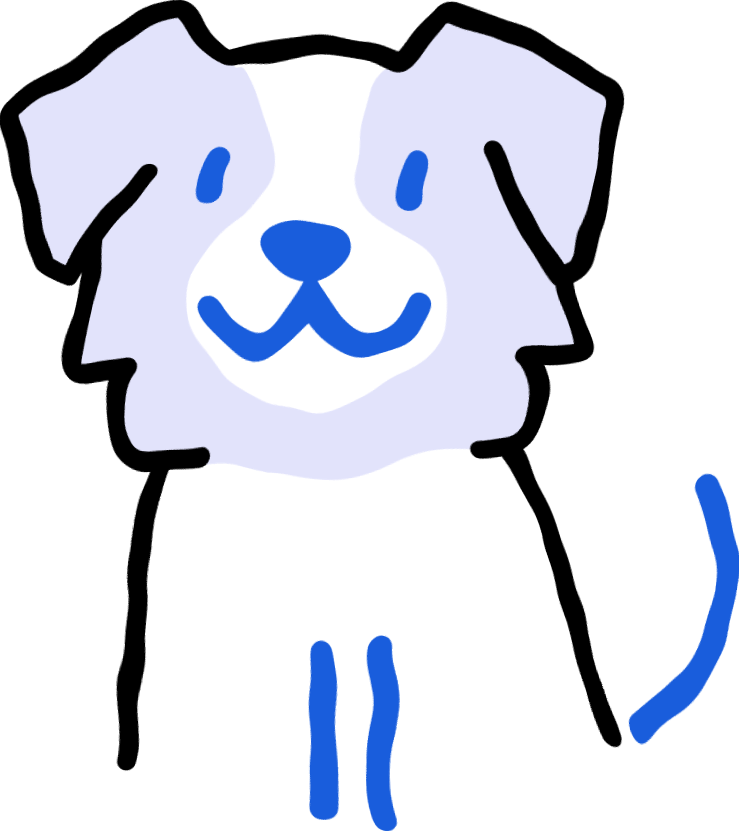
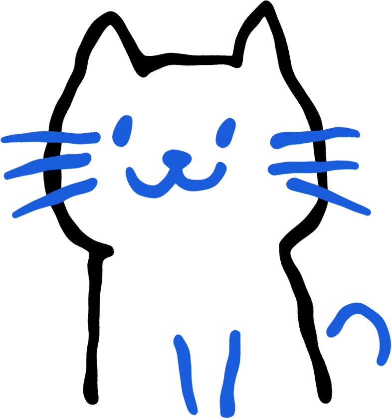

<!DOCTYPE html>
<html lang="en">
<head>
<meta charset="UTF-8">
<meta name="viewport" content="width=device-width, initial-scale=1.0">
<title>Pawl - Vitality Check</title>
<!-- The design tokens below (--pv-font-display/--pv-font-body) already name
     Cormorant + Inter as the Pawl app's own fonts. Self-hosted under
     assets/fonts/ (2026-07-20) - real .woff2 files from the @fontsource
     npm packages, not a Google Fonts network call - restoring the "no build
     step, no network needed" property (BCS chart images were already local
     assets; this was the app's only other external network dependency). -->
<style>
  @font-face{font-family:'Cormorant';font-style:normal;font-weight:300;font-display:swap;src:url('assets/fonts/cormorant-300.woff2') format('woff2');}
  @font-face{font-family:'Cormorant';font-style:normal;font-weight:400;font-display:swap;src:url('assets/fonts/cormorant-400.woff2') format('woff2');}
  @font-face{font-family:'Cormorant';font-style:normal;font-weight:500;font-display:swap;src:url('assets/fonts/cormorant-500.woff2') format('woff2');}
  @font-face{font-family:'Inter';font-style:normal;font-weight:300;font-display:swap;src:url('assets/fonts/inter-300.woff2') format('woff2');}
  @font-face{font-family:'Inter';font-style:normal;font-weight:400;font-display:swap;src:url('assets/fonts/inter-400.woff2') format('woff2');}
  @font-face{font-family:'Inter';font-style:normal;font-weight:500;font-display:swap;src:url('assets/fonts/inter-500.woff2') format('woff2');}

  /* Same design language as the pv-root baseline widget, applied to every
     page (BCS, Part 1-4, results, completion) so the whole flow reads as one
     product. Duplicates the widget's own scoped rules (harmless, idempotent)
     rather than editing PV_WIDGET_HTML - that block stays byte-identical. */
  :root{
    --pv-cream:#fff8f1; --pv-ash:#e2e8f0; --pv-ink:#000000; --pv-blue:#006eff;
    --pv-muted:#4b5563; --pv-warn:#c2410c; --pv-warn-bg:#fdece2;
    --pv-font-display:'Cormorant','Editorial New',ui-serif,Georgia,serif;
    --pv-font-body:'Inter','Founders Grotesk',ui-sans-serif,system-ui,sans-serif;
    --pv-radius-pill:60px;
    /* Zone-color system (2026-07-20 GUI restyle) - same 3 tiers/thresholds
       scoreRingColor() has always used, just promoted from hardcoded JS hex
       literals to reusable tokens so the ring, category bars, and the
       Completion multiplier can all share one color vocabulary. */
    --pv-good:#4caf7d; --pv-mid:#e8a33d; --pv-concern:#c65a2e;
    --pv-space-sm:8px; --pv-space-md:20px; --pv-space-lg:40px;
  }
  *{box-sizing:border-box;}
  body{margin:0;background:var(--pv-cream);color:var(--pv-ink);font-family:var(--pv-font-body);letter-spacing:-0.02em;line-height:1.45;}
  .wrap{max-width:960px;margin:0 auto;padding:24px 20px 80px;}

  .pv-root{
    display:block;background:var(--pv-cream);color:var(--pv-ink);
    font-family:var(--pv-font-body);letter-spacing:-0.02em;
    -webkit-font-feature-settings:"clig","liga";font-feature-settings:"clig","liga";
    border:1.5px solid var(--pv-ash);max-width:960px;margin:0 auto 16px;box-sizing:border-box;
  }
  .pv-root *, .pv-root *::before, .pv-root *::after{ box-sizing:border-box; }

  .pv-header{display:flex;align-items:center;justify-content:space-between;padding:20px clamp(18px,3vw,40px);border-bottom:1.5px solid var(--pv-ash);gap:16px;flex-wrap:wrap;}
  .pv-wordmark{font-family:var(--pv-font-display);font-weight:400;font-size:clamp(17px,2vw,21px);color:var(--pv-blue);}
  .pv-header-illos{display:flex;align-items:center;gap:10px;}
  .pv-header-illos svg{width:34px;height:auto;}
  .pv-ring-wrap{display:flex;align-items:center;gap:10px;}
  .pv-ring-label{font-weight:500;font-size:12px;text-transform:uppercase;color:var(--pv-blue);}
  .pv-ring-svg circle{fill:none;stroke-linecap:round;}
  .pv-ring-bg{stroke:var(--pv-ash);stroke-width:3;}
  .pv-ring-fg{stroke:var(--pv-blue);stroke-width:3;transition:stroke-dashoffset .4s ease;}

  .pv-body{padding:clamp(20px,3vw,36px);}
  .pv-eyebrow{font-weight:500;font-size:13px;text-transform:uppercase;color:var(--pv-blue);margin:0 0 6px;}
  .pv-headline{font-family:var(--pv-font-display);font-weight:400;color:var(--pv-blue);font-size:clamp(24px,3vw,34px);line-height:1;margin:0 0 12px;}
  .pv-hint{color:var(--pv-muted);font-size:13px;font-weight:400;margin:0 0 10px;}

  .pv-grid{display:grid;grid-template-columns:repeat(auto-fit,minmax(220px,1fr));gap:20px 28px;align-items:start;}
  .pv-field{display:flex;flex-direction:column;gap:6px;margin-bottom:22px;}
  .pv-field label{font-weight:500;font-size:13px;text-transform:uppercase;color:var(--pv-blue);}
  .pv-field input[type="text"], .pv-field input[type="number"]{
    font-family:var(--pv-font-display);font-weight:400;font-size:clamp(18px,2vw,22px);color:var(--pv-ink);
    background:transparent;border:none;border-bottom:1.5px solid var(--pv-ash);padding:6px 0;outline:none;letter-spacing:-0.02em;width:100%;
  }
  .pv-field input:focus{border-bottom-color:var(--pv-blue);}
  .pv-subrow{display:flex;gap:16px;}
  .pv-subrow .pv-field{flex:1;margin-bottom:0;}

  /* Underline-only input style (no boxed border) reads badly with the
     browser's native number-spinner arrows, which float disconnected from
     any visible box - hidden everywhere rather than kept for just some
     number inputs, for one consistent look. */
  input[type="number"]::-webkit-inner-spin-button, input[type="number"]::-webkit-outer-spin-button{-webkit-appearance:none;margin:0;}
  input[type="number"]{-moz-appearance:textfield;}

  .pv-toggle-row, .pv-segmented, .pv-chip-grid{display:flex;flex-wrap:wrap;gap:8px;}
  .pv-toggle, .pv-segment, .pv-chip{
    border:1.5px solid var(--pv-ash);border-radius:var(--pv-radius-pill);padding:9px 18px;font-weight:500;font-size:13px;
    text-transform:uppercase;letter-spacing:-0.02em;color:var(--pv-blue);background:transparent;cursor:pointer;
    transition:border-color .15s ease;display:inline-flex;align-items:center;gap:8px;font-family:var(--pv-font-body);
  }
  /* Custom hover/focus description tooltip (2026-07-20, direct request) -
     replaces the native OS title-attribute tooltip (unstyleable, looked
     out of place) with one matching this app's own visual language: white
     background, blue text, positioned above the element. */
  [data-tooltip]{position:relative;}
  [data-tooltip]::after{
    content:attr(data-tooltip);position:absolute;bottom:calc(100% + 8px);left:50%;transform:translateX(-50%);
    background:#fff;color:var(--pv-blue);border:1.5px solid var(--pv-blue);border-radius:8px;padding:8px 10px;
    font-size:12px;font-weight:500;text-transform:none;letter-spacing:normal;line-height:1.4;
    width:200px;max-width:60vw;text-align:left;white-space:normal;
    opacity:0;pointer-events:none;transition:opacity .15s ease;box-shadow:0 4px 12px rgba(0,0,0,.1);z-index:20;
  }
  [data-tooltip]:hover::after, [data-tooltip]:focus-visible::after{opacity:1;}
  .pv-sr-only{position:absolute;width:1px;height:1px;padding:0;margin:-1px;overflow:hidden;clip:rect(0,0,0,0);white-space:nowrap;border:0;}
  .pv-toggle svg{width:18px;height:auto;}
  .pv-toggle.pv-selected, .pv-segment.pv-selected, .pv-chip.pv-selected{border-color:var(--pv-blue);border-width:1.5px;background:rgba(0,110,255,.06);}
  .pv-toggle:focus-visible, .pv-segment:focus-visible, .pv-chip:focus-visible{outline:2px solid var(--pv-blue);outline-offset:2px;}

  .pv-slider-wrap{display:flex;flex-direction:column;gap:6px;}
  .pv-slider-value{font-family:var(--pv-font-display);font-weight:100;font-size:clamp(28px,4vw,40px);color:var(--pv-blue);}
  input[type="range"]{-webkit-appearance:none;width:100%;height:2px;background:var(--pv-ash);outline:none;}
  input[type="range"]:focus-visible{box-shadow:0 0 0 3px rgba(0,110,255,.25);border-radius:4px;}
  input[type="range"]::-webkit-slider-thumb{-webkit-appearance:none;width:15px;height:15px;border-radius:50%;background:var(--pv-cream);border:1.5px solid var(--pv-blue);cursor:pointer;}
  input[type="range"]::-moz-range-thumb{width:15px;height:15px;border-radius:50%;background:var(--pv-cream);border:1.5px solid var(--pv-blue);cursor:pointer;}
  .pv-scale-labels{display:flex;justify-content:space-between;font-size:11px;color:var(--pv-muted);margin-top:4px;text-transform:uppercase;}

  .pv-footer{display:flex;align-items:center;justify-content:space-between;gap:20px;flex-wrap:wrap;padding:20px clamp(18px,3vw,40px);border-top:1.5px solid var(--pv-ash);}
  .pv-wiz-nav{display:flex;align-items:center;gap:12px;margin-left:auto;}
  .pv-pill-btn{
    border:1.5px solid var(--pv-blue);border-radius:var(--pv-radius-pill);background:transparent;color:var(--pv-blue);
    font-family:var(--pv-font-body);font-weight:500;font-size:15px;letter-spacing:-0.02em;padding:13px 38px;
    cursor:pointer;text-transform:uppercase;transition:opacity .15s ease;width:100%;
  }
  .pv-pill-btn.pv-ghost{background:transparent;}
  .pv-pill-btn.pv-small{padding:8px 20px;font-size:12px;width:auto;}
  .pv-pill-btn:hover{opacity:.75;}

  /* Hero score block (2026-07-20 GUI restyle) - the score ring becomes the
     single focal point at the top of a Result page, WHOOP-style
     color-zone-first status communication (verified via /deep-research:
     WHOOP signals status primarily through categorical color zones, not a
     bare number). Same computeResult()/scoreRingColor() data as before, just
     the enlarged single-focus layout instead of one card among several.
     Replaces the old .pv-result/.pv-result-ring-wrap score card entirely -
     that CSS is deleted here since renderResult() no longer uses it (a
     byte-identical scoped copy still lives inside PV_WIDGET_HTML for the
     standalone baseline widget's own small live-preview ring, untouched). */
  .pv-hero{display:flex;flex-direction:column;align-items:center;text-align:center;gap:6px;margin-bottom:var(--pv-space-md);}
  .pv-hero-ring-wrap{position:relative;width:clamp(140px,30vw,180px);height:clamp(140px,30vw,180px);}
  .pv-hero-ring-wrap svg{width:100%;height:100%;transform:rotate(-90deg);}
  .pv-hero-ring-bg{fill:none;stroke:var(--pv-ash);stroke-width:7;}
  .pv-hero-ring-fg{fill:none;stroke-width:7;stroke-linecap:round;transition:stroke-dashoffset 1s ease;}
  .pv-hero-num{position:absolute;inset:0;display:flex;flex-direction:column;align-items:center;justify-content:center;}
  .pv-hero-num-val{font-family:var(--pv-font-display);font-weight:300;font-size:clamp(38px,7vw,52px);line-height:1;}
  .pv-hero-num-label{font-weight:500;font-size:11px;text-transform:uppercase;color:var(--pv-muted);margin-top:2px;}
  .pv-hero-zone{font-weight:600;font-size:clamp(17px,2.4vw,20px);margin-top:8px;}
  .pv-hero-delta{font-size:13px;color:var(--pv-muted);max-width:340px;margin-top:2px;}

  /* Lighter divider-based grouping (2026-07-20 GUI restyle) - replaces
     stacking every sub-item in its own heavy-bordered .pv-card, the direct
     source of the "too much information thrown at you" feedback. Same
     content/data, just grouped as one flowing section with sub-headers and
     border-top dividers instead of 3-4 separate boxes. */
  .pv-section{margin-bottom:16px;}
  .pv-section + .pv-section{border-top:1.5px solid var(--pv-ash);padding-top:16px;}
  .pv-section-title{font-weight:500;font-size:14px;margin:0 0 10px;color:var(--pv-ink);}
  .pv-row-list{margin:0;padding:0;list-style:none;display:flex;flex-direction:column;gap:8px;}
  .pv-row-list li{display:flex;align-items:flex-start;gap:10px;font-size:14px;color:var(--pv-ink);line-height:1.4;}
  .pv-row-dot{flex-shrink:0;width:7px;height:7px;border-radius:50%;margin-top:6px;background:var(--pv-blue);}
  .pv-row-dot.pv-dot-watch{background:var(--pv-concern);}
  .pv-row-dot.pv-dot-help{background:var(--pv-good);}

  /* supplemental components (not in the original widget - same language) */
  .pv-card{border:1.5px solid var(--pv-ash);border-radius:14px;padding:18px 20px;margin-bottom:16px;text-align:left;}
  .pv-card-center{text-align:center;}
  /* Path-chooser cards are real <button>s (keyboard/screen-reader reachable,
     same a11y bar as the citation tooltip) - reset the UA button chrome so
     they read as cards, not system buttons. */
  .pv-path-card{background:transparent;font-family:inherit;width:100%;cursor:pointer;display:block;}
  .pv-path-card:hover,.pv-path-card:focus-visible{background:rgba(0,110,255,.1) !important;}
  .pv-stat-row{display:flex;justify-content:center;gap:36px;margin-bottom:20px;flex-wrap:wrap;}
  .pv-stat-block{text-align:center;min-width:110px;}
  .pv-stat-label{font-weight:500;font-size:12px;text-transform:uppercase;color:var(--pv-blue);margin-bottom:2px;}
  .pv-stat-value{font-family:var(--pv-font-display);font-weight:300;font-size:clamp(30px,4vw,40px);color:var(--pv-blue);line-height:1.1;}
  .pv-stat-value .pv-unit{font-size:15px;font-weight:400;}
  .pv-stat-note{font-size:11px;color:var(--pv-muted);max-width:160px;margin:4px auto 0;}
  .pv-warn-banner{background:var(--pv-warn-bg);border:1.5px solid var(--pv-warn);color:var(--pv-warn);border-radius:12px;padding:14px 16px;font-size:14px;margin-bottom:16px;}
  .pv-italic-note{font-size:12px;color:var(--pv-muted);font-style:italic;margin-top:10px;}
  .pv-insight-title{font-weight:400;font-size:15px;margin-bottom:10px;color:var(--pv-ink);}
  .pv-card ul{margin:0;padding-left:20px;}
  .pv-card li{font-size:14px;color:var(--pv-ink);margin-bottom:6px;line-height:1.4;}
  .pv-badge{display:inline-block;background:rgba(0,110,255,.08);color:var(--pv-blue);font-weight:400;font-size:13px;padding:6px 14px;border-radius:999px;margin-bottom:14px;}
  /* Aito the guide (2026-07-20, direct request) - a small persistent
     presence on dog-only pages. Reuses .pv-card's rounded-callout language
     (just tinted) rather than inventing a new visual style. */
  .pv-guide{display:flex;gap:12px;align-items:flex-start;background:rgba(0,110,255,.06);border:none;border-left:3px solid var(--pv-blue);border-radius:0 12px 12px 0;padding:16px 18px;margin-bottom:16px;text-align:left;}
  .pv-guide-icon{flex-shrink:0;width:48px;height:48px;}
  .pv-guide-icon svg{width:100%;height:100%;}
  .pv-guide-text{font-size:13px;line-height:1.45;color:var(--pv-ink);}
  .pv-guide-text p{margin:0 0 6px;}
  .pv-guide-text p:last-child{margin-bottom:0;}
  .pv-guide-name{font-weight:600;color:var(--pv-blue);}
  .pv-tone{font-size:13px;font-weight:500;color:var(--pv-ink);margin-top:6px;}
  .pv-bar{height:8px;border-radius:999px;background:var(--pv-ash);overflow:hidden;}
  .pv-bar-fill{height:100%;background:var(--pv-blue);border-radius:999px;transition:width .2s;}
  .pv-bar-copy{font-size:13px;color:var(--pv-muted);margin-top:6px;}
  .pv-dev-table{width:100%;border-collapse:collapse;font-size:13px;}
  .pv-dev-table th,.pv-dev-table td{text-align:left;padding:6px 10px;border-bottom:1px solid var(--pv-ash);white-space:nowrap;}
  .pv-dev-table th{color:var(--pv-muted);font-weight:500;}
  .pv-divider{margin-top:14px;padding-top:14px;border-top:1.5px solid var(--pv-ash);}
  .pv-cta-row{display:flex;gap:10px;}
  .pv-footnote{color:var(--pv-muted);font-size:12px;text-align:center;margin-top:20px;}

  @media (max-width:520px){
    .pv-footer{flex-direction:column;align-items:stretch;}
  }
</style>
</head>
<body>
<div class="wrap" id="app"></div>

<!-- ?v= is a manual cache-buster (no build step to hash these automatically) -
     bump it whenever any of these files change, so a normal refresh (not
     just a hard-refresh) always picks up the latest version. -->
<script src="frailty-model.js?v=2"></script>
<script src="age-estimator.js?v=2"></script>
<script src="concern-analyzer.js?v=2"></script>
<script src="content/young-dog.js?v=2"></script>
<script src="content/middle-dog.js?v=2"></script>
<script src="content/senior-dog.js?v=2"></script>
<script src="content/young-cat.js?v=2"></script>
<script src="content/middle-cat.js?v=2"></script>
<script src="content/senior-cat.js?v=2"></script>
<script src="content/puppy-dog.js?v=2"></script>
<script src="content/kitten-cat.js?v=2"></script>
<script>
/* ---------- Data model ---------- */
/* Deficit score: 0 absent, 0.5 mild, 1 severe/present.
   Age/FI model lives in frailty-model.js - see that file for the interim
   scoring model and its calibration TODO. */
const { lifeStage, lifeStageDisplay, fiZone, longevityScore, LONGEVITY_SCORE_ANCHORS, healthMultiplier, foodActivityBalance,
        foodEquationMultiplier, foodBalancePercentile,
        catHumanEquivalent, dogHumanEquivalent, bcsToDeficit,
        estimatePhysiologicalAge, scoreActivityMinutes, classifyDelta,
        bandYears, AGE_GUESS, overweightPercentile, fuseAge, deltaPercentOfAge,
        BCS_CHART, getActivityMinutesThreshold, activityGuidance,
        dogSizeClass, CHONDRODYSTROPHIC_BREEDS, BRACHY_BREEDS,
        petBreedTags, matchBreedRiskNotes,
        expectedFIContinuous, breedModifier, seniorGuessAge } = window.FrailtyModel;

const KG_PER_LB = 0.45359237;

/* Real veterinary reference charts (WSAVA/Daily Paws for dogs; Bjornvad/
   Laflamme via APOP for cats) - dropped in per the BCS-chart hook points
   already built into the BCS step. */
const BCS_REFERENCE_CHARTS = { dog: "assets/bcs-chart-dog.png", cat: "assets/bcs-chart-cat.webp" };

const SCALE3 = [
  {v:0,   label:"Not at all"},
  {v:0.5, label:"A little"},
  {v:1,   label:"Yes, noticeably"},
];

/* _BASE = the canonical/original question definitions - unchanged shape,
   still the single source of truth for what each question looks like.
   Stage-branched content (content/*.js) selects a subset of these by id
   plus splices in net-new items (see assembleActiveParts() below); it never
   duplicates or forks the question objects themselves. */
const PART1_CORE_BASE = [
  {id:"mob_gate", system:"Mobility",
    text:{dog:"Any trouble with stairs or jumping into the car, or does your pet seem stiff/slow to get up after resting?",
          cat:"Any reluctance or trouble jumping to a favorite high perch, or does your pet seem stiff/slow to get up after resting?"}},
  {id:"p1_activity", type:"minutes",
    text:{both:"On a typical day, about how many minutes of walking or active play does your pet get?"},
    hint:"Rough estimate is fine - total minutes across the whole day."},
  {id:"p1_exhaustion", text:{both:"Tires quickly on walks or play, or needs longer to recover?"}, dependsOn:{id:"mob_gate", min:0.5}},
  {id:"p3_exercise_tolerance", text:{dog:"Has to stop and rest on normal walks?", cat:"Avoids movement, or hides, more than usual?"}, dependsOn:{id:"mob_gate", min:0.5}},
  {id:"p3_muscle", text:{both:"Visible loss of muscle over the back or hind legs?"}, dependsOn:{id:"mob_gate", min:0.5}},
];

const PART2_BASE = [
  {id:"p2_vision", text:{both:"Bumping into things, or hesitant in dim light?"}},
  {id:"p2_hearing", text:{both:"Not responding to their name or familiar sounds?"}},
  {id:"p2_sleep", text:{both:"Restless nights, pacing, or a changed sleep schedule?"}},
  {id:"p2_interaction", text:{both:"More withdrawn, or unusually clingy compared to before?"}},
  {id:"p1_vitality", text:{both:"Overall - does your pet just seem a little less spry lately?"}, isGlobal:true},
  {id:"p2_cognition", text:{both:"Staring at walls, getting \"stuck,\" or seeming confused?"}},
  {id:"p2_cognition_detail", detailOnly:true, refines:"p2_cognition", dependsOn:{id:"p2_cognition", min:0.5},
    text:{both:"Is that a daily thing, or just occasional?"},
    opts:[{v:0.5,label:"Occasional"},{v:1,label:"Daily"}]},
];

const PART3_BASE = [
  {id:"appetite_weight_gate", text:{both:"Any notable change in eating, or weight loss/gain over recent months?"}},
  {id:"appetite_weight_detail", detailOnly:true, dependsOn:{id:"appetite_weight_gate", min:0.5},
    text:{both:"Gained, or lost?"}, opts:[{v:"gain",label:"Gained"},{v:"loss",label:"Lost"},{v:"both",label:"Both, at different times"}]},
  {id:"coat_dental_skin_gate", text:{dog:"Noticed anything different about their coat, teeth/breath, or new lumps/skin changes?",
    cat:"Noticed anything different about their coat/self-grooming, teeth/breath, or new lumps/skin changes?"}},
  {id:"coat_dental_skin_detail", detailOnly:true, dependsOn:{id:"coat_dental_skin_gate", min:0.5},
    text:{both:"Which one, mainly?"}, opts:[{v:"coat",label:"Coat/grooming"},{v:"dental",label:"Teeth/breath"},{v:"skin",label:"Lumps/skin"}]},
  {id:"water_urination_continence_gate", text:{both:"Drinking, urinating, or having accidents more or less than usual?"}},
  {id:"water_detail", detailOnly:true, dependsOn:{id:"water_urination_continence_gate", min:0.5},
    text:{both:"Which one, mainly?"}, opts:[{v:"water",label:"Drinking"},{v:"urination",label:"Urination"},{v:"continence",label:"Accidents/leaking"}]},
  {id:"p3_digestion", text:{both:"Recurring vomiting, diarrhea, or constipation?"}},
  {id:"p3_breathing", text:{both:"Coughing, panting at rest, or labored breathing?"}},
  {id:"temperature_pain_gate", text:{both:"Any signs of discomfort - flinching when touched, reluctant to be handled, vocalizing, or newly sensitive to hot/cold?"}},
  {id:"discomfort_detail", detailOnly:true, dependsOn:{id:"temperature_pain_gate", min:0.5},
    text:{both:"Which one, mainly?"}, opts:[{v:"pain",label:"Touch/handling"},{v:"temperature",label:"Temperature sensitivity"},{v:"both",label:"Both"}]},
];

/* p4_gate: "any medical complications?" leading question, per demo feedback.
   Same dependsOn/visibleItems() mechanism as mob_gate -> p1_exhaustion/
   p3_exercise_tolerance/p3_muscle - a "No" here hides all 7 detail
   questions below (visibleItems() already does this, no new gating code).
   Deliberately a plain yes/no pair, not SCALE3 - this is a presence check
   ("has anything happened"), not a severity scale. A "No" answer leaves
   the 7 detail questions unanswered (never in state.answers), same
   "skipped just doesn't count" rule as every other gate in this app -
   categoryFI(4) then reflects just the gate itself for a clean pet,
   consistent with how a "No" on mob_gate already works today. */
const PART4_BASE = [
  {id:"p4_gate", text:{both:"Has your pet experienced any medical complications recently?"}, opts:[{v:0,label:"No"},{v:1,label:"Yes"}]},
  {id:"p4_diagnoses", text:{both:"How many ongoing conditions has a vet diagnosed?"}, opts:[{v:0,label:"None"},{v:0.5,label:"One"},{v:1,label:"Two or more"}], dependsOn:{id:"p4_gate", min:0.5}},
  {id:"p4_medications", text:{both:"How many daily medications right now?"}, opts:[{v:0,label:"None"},{v:0.5,label:"1–2"},{v:1,label:"3+"}], dependsOn:{id:"p4_gate", min:0.5}},
  {id:"p4_vet_visits", text:{both:"How often have vet visits been in the last 12 months?"}, opts:[{v:0,label:"Routine / annual"},{v:0.5,label:"A few times"},{v:1,label:"Frequent or urgent"}], dependsOn:{id:"p4_gate", min:0.5}},
  {id:"p4_dental_history", text:{both:"Any extractions or diagnosed periodontal disease?"}, opts:[{v:0,label:"No"},{v:0.5,label:"Mild / early"},{v:1,label:"Yes"}], dependsOn:{id:"p4_gate", min:0.5}},
  {id:"p4_surgical_history", text:{both:"Any major surgeries or unresolved injuries?"}, opts:[{v:0,label:"None"},{v:0.5,label:"Minor, resolved"},{v:1,label:"Major or unresolved"}], dependsOn:{id:"p4_gate", min:0.5}},
  {id:"p4_bloodwork", text:{both:"(Optional) If your vet has run bloodwork - any values flagged abnormal?"}, opts:[{v:0,label:"Normal / none flagged"},{v:1,label:"Abnormal flagged"}], optional:true, dependsOn:{id:"p4_gate", min:0.5}},
  {id:"p4_organ_findings", text:{both:"(Optional) Any vet-noted findings - heart murmur, kidney values, etc.?"}, opts:[{v:0,label:"None noted"},{v:1,label:"Yes, noted"}], optional:true, dependsOn:{id:"p4_gate", min:0.5}},
  {id:"p4_owner_concern", text:{both:"Anything else about them that's been worrying you?"}, opts:SCALE3, dependsOn:{id:"p4_gate", min:0.5}},
];

/* Reproductive status detail is captured as a life-table modifier per the spec
   ("age modifier", not a deficit) - informational only, not part of the FI denominator. */

/* ---------- App state ---------- */
const state = {
  // pathchooser -> baseline -> bcs -> part1 -> result1 -> part2 -> result2 ->
  // part3 -> result3 -> part4 -> result4 -> complete
  // (or baseline -> puppykitten -> puppykittensummary for a pet under 1yr -
  // see renderBaseline()'s #wiz-next routing branch)
  // "pathchooser" restored as the default entry (2026-07-20, direct request)
  // - a prior pass had demoted it to a hidden dev-only shortcut per stakeholder
  // feedback ("three separate quiz paths not needed"), reversed here. Its own
  // "Or set up your own pet manually" link still skips straight to baseline
  // for anyone who doesn't want a preset.
  step:"pathchooser",
  baseline:{
    species:"dog", name:"", breed:"",
    weightValue:0, weightUnit:"lb", // starts blank like age (0 || "" renders as an empty field, placeholder shown) rather than presuming a weight - direct request, 2026-07-20
    sexNeuter:"unknown", // informational only - see reproductive-status note above, not part of the FI denominator
    weightGoal:"maintain", // owner-stated intent (gain/maintain/lose) - informational, reconciled against BCS on the BCS step, not a scoring input
    dobKnown:true, dobMonth:"", dobDay:"", dobYear:"",
    yearsOnlyAge:"",
    bcs:5,
    photoFile:null, photoEstimate:null, bcsSkippedByPhoto:false,
    healthGoals:[],
  },
  answers:{}, // id -> score
  bonding:{}, // id -> selected opt value, puppy/kitten flow only - NEVER read by idsForPart()/categoryFI()/computeResult(), deliberately zero scoring
  // Round 4's optional free-text concern field (separate from the scored
  // p4_owner_concern scale question) - text is never scored, highlights are
  // AI-extracted via concern-service/ (optional, degrades gracefully - see
  // concern-analyzer.js).
  concern:{text:"", highlights:[], status:null},
  details:{}, // id -> informational-only detail answer (detailOnly questions) - never enters the FI denominator
  decisionLog:{}, // id -> {stepOrder, timestamp, category, label, selectedLabel, score} - the decision-visualization trail
  decisionStepCounter:0,
  // partNumber -> {score, catScore, n, timestamp} - snapshot of that round's
  // real result, cached for the round-progress chart. Deliberately
  // single-sitting-only, per product direction (no cross-session history
  // tracking - historical health data is unreliable, repeat visits
  // unlikely): this is a plain in-memory object, never persisted
  // (no localStorage/backend anywhere in this app), wiped on reload or a
  // fresh applyPathPreset(). Do not add persistence here - that's a
  // deliberate scope boundary, not an oversight.
  resultHistory:{},
  devBreakdownReturnTo:null, // which step to Back to from "devbreakdown" - set right before switching to it, since it's reachable from multiple pages now
  followup:{
    exerciseMinutes:"", // seeded from p1_activity once the complete page first renders
    mealsPerDay:"",
    foodType:"",
    portionScore:null, // 0 (about right) / 0.5 (a bit more) / 1 (a lot more) - same deficit convention as everything else
    treatsScore:null,
  },
};

function weightKg(){
  const v = parseFloat(state.baseline.weightValue) || 0;
  return state.baseline.weightUnit === "lb" ? v * KG_PER_LB : v;
}

function dobAgeYears(){
  const b = state.baseline;
  if (!b.dobKnown) return null;
  const y = parseInt(b.dobYear), m = parseInt(b.dobMonth), d = parseInt(b.dobDay);
  if (!y || !m || !d) return null;
  const dob = new Date(y, m-1, d);
  if (isNaN(dob.getTime())) return null;
  const ms = Date.now() - dob.getTime();
  if (ms <= 0) return null;
  return Math.max(0.02, ms / (365.25*24*3600*1000));
}

/* Confidence-weighted fusion - the single seam where DOB, an owner years-only
   guess, a photo estimate, and a last-resort population prior all combine
   into one age value. A photo signal with confidence 0 (today's untrained
   backend) contributes nothing - this is how "don't rely on image
   estimation alone" is enforced structurally, not just in copy. */
function computeFinalAge(){
  const b = state.baseline;
  const signals = [];
  const dobAge = dobAgeYears();
  if (dobAge != null) signals.push({years: dobAge, confidence: 1});
  const yearsOnly = parseFloat(b.yearsOnlyAge);
  if (!b.dobKnown && Number.isFinite(yearsOnly) && yearsOnly > 0) signals.push({years: yearsOnly, confidence: 0.5});
  if (b.photoEstimate && b.photoEstimate.confidence > 0) {
    signals.push({years: b.photoEstimate.years, confidence: b.photoEstimate.confidence});
  }
  // Last-resort prior so fusion is never empty. Was AGE_GUESS.adult (flat 5,
  // species/size-unaware) - switched to seniorGuessAge(), the size-aware
  // senior-onset age frailty-model.js's own comment calls "preferred for the
  // size-aware case" (it was exported and tested but never actually wired
  // in here - the real fix this shipped for was never live in the app).
  signals.push({years: seniorGuessAge(b.species, weightKg()), confidence: 0.1});
  return fuseAge(signals);
}

function answeredScores(ids){
  return ids.map(id=>state.answers[id]).filter(v => v !== undefined);
}

// Decision-visualization trail: upsert-by-id (not append-only) so changing an
// earlier answer updates that row in place at its original step position,
// rather than growing a duplicate/stale entry.
function logDecision(id, entry){
  if (!state.decisionLog[id]) state.decisionLog[id] = {stepOrder: ++state.decisionStepCounter};
  Object.assign(state.decisionLog[id], entry, {timestamp: Date.now()});
}
function orderedDecisionLog(){
  return Object.entries(state.decisionLog)
    .map(([id, d]) => ({id, ...d}))
    .sort((a,b) => a.stepOrder - b.stepOrder);
}

/* ---------- life-stage x breed content loader ---------- */
/* Picks the stage-species content module (window.PawlStageContent, loaded
   from content/*.js) matching this pet's lifeStage()+species, once baseline
   is known. Returns null before that (renderPart/idsForPart fall back to
   the unmodified _BASE arrays in that case - same behavior as before this
   feature existed). */
function activeStageContent(){
  const b = state.baseline;
  if (!b || !b.species) return null;
  const { years: age } = computeFinalAge();
  if (age == null) return null;
  const stage = lifeStage(b.species, age, weightKg());
  const key = `${stage}-${b.species}`;
  return (window.PawlStageContent && window.PawlStageContent[key]) || null;
}

/* Resolves a content module's `questions` array (string refs to _BASE ids,
   or full net-new question objects tagged with which round they belong to)
   into the 4 actual per-round arrays renderPart()/idsForPart() consume.
   Falls back to the unmodified _BASE arrays when no stage content is active
   yet, so nothing regresses before baseline/age is known. */
/* Every base question, by id, across all 4 rounds - lets a content file tell
   an override (reword an existing question for this stage/species, keeping
   its opts/dependsOn/scoring untouched) apart from a genuinely net-new item
   (round-tagged, or an id this map has never seen). */
const ALL_BASE_QUESTIONS_BY_ID = {};
[PART1_CORE_BASE, PART2_BASE, PART3_BASE, PART4_BASE].forEach(arr => arr.forEach(q => { ALL_BASE_QUESTIONS_BY_ID[q.id] = q; }));

/* Breed-conditional net-new items (e.g. a BOAS module that only appears for
   brachycephalic dogs, an IVDD module only for chondrodystrophic dogs) -
   reuses the exact same petBreedTags() matcher breedRiskNotes already use,
   just applied to actual scored questions instead of watch-for copy. Each
   group is {tags:[...], questions:[{...round-tagged net-new item...}]};
   only groups whose tags overlap this pet's tags contribute their
   questions. This is how "tailored to both age and breed at once" works -
   a French Bulldog taking the young-dog survey gets the young-dog base set
   PLUS a BOAS module; a non-brachy young Labrador gets just the base set. */
function matchedConditionalQuestions(content){
  if (!content.breedConditionalQuestions) return [];
  const b = state.baseline;
  const tags = petBreedTags(b.species, b.breed, weightKg());
  return content.breedConditionalQuestions
    .filter(group => group.tags.some(t => tags.includes(t)))
    .flatMap(group => group.questions);
}

function assembleActiveParts(){
  const content = activeStageContent();
  if (!content) return {part1:PART1_CORE_BASE, part2:PART2_BASE, part3:PART3_BASE, part4:PART4_BASE};
  const refIds = new Set(content.questions.filter(q => typeof q === "string"));
  // An object entry is a text/hint OVERRIDE of an existing base question if
  // it has no `round` tag and its id is already a real base question - the
  // override merges onto the base object (opts/dependsOn/type/id untouched,
  // so scoring is byte-identical to "the original calculations") and only
  // swaps presentation fields like `text`/`hint`. Anything else (round-
  // tagged, or an id the base set has never seen) is genuinely net-new.
  const overridesById = {};
  const netNew = [];
  content.questions.forEach(q => {
    if (typeof q !== "object") return;
    if (q.round === undefined && ALL_BASE_QUESTIONS_BY_ID[q.id]) overridesById[q.id] = q;
    else netNew.push(q);
  });
  netNew.push(...matchedConditionalQuestions(content));
  function resolve(q){ return overridesById[q.id] ? {...q, ...overridesById[q.id]} : q; }
  function build(baseArr, roundNum){
    const kept = baseArr.filter(q => refIds.has(q.id) || overridesById[q.id]).map(resolve);
    const additions = netNew.filter(q => q.round === roundNum);
    return additions.concat(kept); // net-new items lead, same position their replaced id (mob_gate/p2_cognition) originally held
  }
  return {
    part1: build(PART1_CORE_BASE, 1),
    part2: build(PART2_BASE, 2),
    part3: build(PART3_BASE, 3),
    part4: build(PART4_BASE, 4),
  };
}

/* Single source of truth for "which answer ids belong to round N" - shared by
   computeResult() (pools every round up to N for the overall FI) and
   categoryScore() (scopes to just round N for that round's own display score). */
function idsForPart(partNumber){
  const scorable = q => !q.detailOnly;
  const parts = assembleActiveParts();
  const idsByPart = {
    1: parts.part1.filter(scorable).map(q=>q.id),
    2: parts.part2.filter(scorable).map(q=>q.id),
    3: parts.part3.filter(scorable).map(q=>q.id).concat(["p1_bcs"]),
    4: parts.part4.filter(scorable).map(q=>q.id),
  };
  return idsByPart[partNumber];
}

/* senior-cat's content swaps the single mob_gate question for 6 DJD-checklist
   items (djd_run/jump_up/jump_down/stairs_up/stairs_down/chase) - mob_gate
   itself becomes a DERIVED value (max of whichever of those 6 are answered)
   so the 3 existing dependsOn:{id:"mob_gate"} consumers (p1_exhaustion,
   p3_exercise_tolerance, p3_muscle) and the joint-support food-tag read keep
   working unchanged. No-op (does nothing) for every other stage/species,
   where mob_gate is still answered directly. */
const DJD_ITEM_IDS = ["djd_run","djd_jump_up","djd_jump_down","djd_stairs_up","djd_stairs_down","djd_chase"];
function recomputeDerivedMobGate(){
  const answered = DJD_ITEM_IDS.map(id => state.answers[id]).filter(v => v !== undefined);
  if (answered.length) state.answers.mob_gate = Math.max(...answered);
}

/* Breed-risk tag -> short display label, used by guideBreedNotesHtml() below
   (the "cherry-pick #4" citation-popover version and the separate
   Round-1-only/Round-4+Completion split were retired 2026-07-20 once both
   dog and cat guides existed - Aito/Miso are now the single breed-content
   surface for both species; see the README's Aito/Miso section). */
const BREED_RISK_TAG_LABEL = {
  brachycephalic:"Flat-faced breed risk", chondrodystrophic:"Spinal-disc breed risk",
  giant:"Giant-breed risk", generic:"Stage-specific risk",
};

// Aito/Miso's version of the same content, whichever guide matches this
// pet's species - shown on Results 1-4 + Completion for both dogs and cats
// now (2026-07-20). This is now the single breed-content surface for both
// species - see the (deleted) matchedBreedRiskHtml()/deepBreedRiskHtml()
// note in the README's Aito/Miso section for what this replaced.
function guideBreedNotesHtml(){
  const b = state.baseline;
  const cfg = GUIDE_CONFIG[b.species];
  if (!cfg) return "";
  const content = activeStageContent();
  if (!content) return "";
  const notes = matchBreedRiskNotes(b.species, b.breed, weightKg(), content.breedRiskNotes);
  if (!notes.length) return "";
  const notesHtml = notes.map((n,idx)=>{
    const sources = (n.sourceIds||[]).map(id=>(content.sources||[]).find(s=>s.id===id)).filter(Boolean);
    return `<div${idx>0?' style="margin-top:10px;padding-top:10px;border-top:1px solid var(--pv-ash);"':''}>
      <div style="font-weight:600;margin-bottom:3px;">${BREED_RISK_TAG_LABEL[n.tags[0]] || "Watch out for"}</div>
      <p style="margin:0 0 4px;">${n.text}</p>
      ${sources.length ? `<p style="margin:0;color:var(--pv-muted);font-size:12px;"><strong>Source${sources.length>1?"s":""}:</strong> ${sources.map(s=>`<a href="${s.url}" target="_blank" rel="noopener">${s.title}</a> (${s.author}, ${s.year})`).join("; ")}</p>` : ""}
    </div>`;
  }).join("");
  return guideHtml(cfg, `<p><span class="pv-guide-name">${cfg.name} says:</span> Here's what's worth knowing about ${b.breed || "this breed"}:</p>${notesHtml}`);
}

/* Raw 0-1 deficit mean for one category - the same number longevityScore()
   turns into that round's 0-100 display score, and (see computeResult) the
   building block for the overall observedFI. null if nothing in this
   category has been answered yet, so an unanswered round doesn't drag the
   average toward 0 - same "skipped just doesn't count" rule as everywhere
   else in this model. */
function categoryFI(partNumber){
  const scores = answeredScores(idsForPart(partNumber));
  return scores.length ? scores.reduce((a,b)=>a+b,0)/scores.length : null;
}

/* Per-category 0-100 display score for that round's result page - reuses
   longevityScore()'s existing FI curve unchanged, just scoped to one
   category's ids instead of every answered id. */
function categoryScore(partNumber){
  const fi = categoryFI(partNumber);
  return fi != null ? longevityScore(fi) : null;
}

function computeResult(partNumber){
  let allIds = [];
  const catFIs = [];
  for (let p=1;p<=partNumber;p++){
    allIds = allIds.concat(idsForPart(p));
    const fi = categoryFI(p);
    if (fi != null) catFIs.push(fi);
  }
  const scores = answeredScores(allIds);
  const n = scores.length;
  // observedFI is the average of each answered category's own FI (not a flat
  // mean across every item) - this is how "each category score is added into
  // the health multiplier" is realized: a category with 12 items and one
  // with 5 each get one equal vote, rather than the bigger category
  // dominating the pooled average.
  const observedFI = catFIs.length ? catFIs.reduce((a,b)=>a+b,0)/catFIs.length : 0;

  const species = state.baseline.species;
  const weight = weightKg();
  const breed = state.baseline.breed;
  const { years: age, confidence: ageConfidence } = computeFinalAge();
  const {center, delta, eFI} = estimatePhysiologicalAge({species, chronAge: age, weightKg: weight, breed, observedFI});

  let band = bandYears(n);
  if (species === "cat") band *= 1.3; // Sofia/Priya: feline aging science lags dogs - widen the band

  const stage = lifeStage(species, age, weight); // feeds the expected-FI curve
  const stageDisplay = lifeStageDisplay(species, age, weight); // 4-bucket puppy/young/middle/senior, UI-only
  const zone = fiZone(observedFI);
  const score = longevityScore(observedFI);
  const multiplier = healthMultiplier(observedFI, eFI);
  const deltaCategory = classifyDelta(delta);
  const overweightPct = overweightPercentile(species, state.baseline.bcs);

  return {
    n, observedFI, eFI, center, delta, deltaCategory, chronAge: age, ageConfidence, breed,
    low: Math.max(0.1, center-band), high: center+band,
    stage, stageDisplay, zone, score, multiplier, species, overweightPct,
    humanEq: species==="cat" ? catHumanEquivalent(center) : dogHumanEquivalent(center),
  };
}

/* ---------- Render ---------- */
const app = document.getElementById("app");

function speciesText(q){
  if (q.text.both) return q.text.both;
  return q.text[state.baseline.species];
}

function optRow(id, opts, cur){
  // data-idx (not the raw value) so detail-question options can carry string
  // values (e.g. "gain"/"coat") without any parseFloat/string guessing on click.
  return `<div class="pv-segmented" data-qid="${id}">` +
    opts.map((o,i) => `<button type="button" class="pv-segment ${cur===o.v?'pv-selected':''}" data-idx="${i}">${o.label}</button>`).join("") +
    `</div>`;
}

/* Shared by the Round 1 minutes question and the completion page's exercise
   field - a real target/safe-max figure (from activityGuidance() in
   frailty-model.js, species/size/breed-aware) instead of a vague "answer
   accurately" hint, plus a caution flag once minutes clear the same
   ACTIVITY_UPPER_RATIO_CAUTION multiplier scoreActivityMinutes() itself uses
   for the high-end deficit - so the copy and the scoring agree on what
   counts as "too much." */
function activityGuidanceText(minutesVal){
  const b = state.baseline;
  const g = activityGuidance(b.species, weightKg(), b.breed);
  const base = `Typical target for a pet their size: ~${g.target} min/day (up to ~${g.safeMax} min before it starts reading as more than usual).`;
  if (!Number.isFinite(minutesVal)) return {text: base, caution:false};
  if (minutesVal >= g.safeMax){
    return {text: `${base} At ~${minutesVal} min, that's above the usual safe range for their size - worth easing back unless your vet has said otherwise.`, caution:true};
  }
  return {text: base, caution:false};
}

function minutesInput(q){
  const raw = (state.raw && state.raw[q.id]) ?? "";
  const g = activityGuidanceText(parseFloat(raw));
  return `<input type="number" class="minutes-input" data-qid="${q.id}" min="0" step="5" value="${raw}" placeholder="e.g. 30">
    <p class="pv-hint activity-guidance" id="activity-guidance-${q.id}" style="${g.caution?'color:var(--pv-warn);':''}">${g.text}</p>`;
}

function questionBlock(q, opts){
  const store = q.detailOnly ? state.details : state.answers;
  return `<div class="pv-field" style="grid-column:1/-1;">
    <label>${speciesText(q)}</label>
    ${q.hint?`<p class="pv-hint">${q.hint}</p>`:""}
    ${q.type==="minutes" ? minutesInput(q) : optRow(q.id, opts || SCALE3, store[q.id])}
  </div>`;
}

/* ---------- Shared pv- page shell (design consistency across every page) ---------- */
const PV_STEP_ORDER = ["bcs","part1","result1","part2","result2","part3","result3","part4","result4","complete"];
function pvStepPct(step){
  const idx = PV_STEP_ORDER.indexOf(step);
  return idx < 0 ? 0 : Math.round(((idx+1)/PV_STEP_ORDER.length)*100);
}
const PV_RING_CIRC = 62.8;
function pvRingHTML(pct){
  const offset = PV_RING_CIRC * (1 - pct/100);
  return `
    <div class="pv-ring-wrap">
      <span class="pv-ring-label">${pct}% complete</span>
      <svg class="pv-ring-svg" width="26" height="26" viewBox="0 0 26 26">
        <circle class="pv-ring-bg" cx="13" cy="13" r="10"></circle>
        <circle class="pv-ring-fg" cx="13" cy="13" r="10" stroke-dasharray="${PV_RING_CIRC}" stroke-dashoffset="${offset}"></circle>
      </svg>
    </div>`;
}
function pvShell(wordmark, step, bodyHtml, footerHtml){
  return `
    <section class="pv-root">
      <div class="pv-header">
        <div class="pv-wordmark">${wordmark} - Pet Vitals</div>
        ${pvRingHTML(pvStepPct(step))}
      </div>
      <div class="pv-body">${bodyHtml}</div>
      ${footerHtml ? `<div class="pv-footer">${footerHtml}</div>` : ""}
    </section>`;
}

function render(){
  const s = state.step;
  if (s === "pathchooser") return renderPathChooser();
  if (s === "baseline") return renderBaseline();
  if (s === "puppykitten") return renderPuppyKitten();
  if (s === "puppykittensummary") return renderPuppyKittenSummary();
  if (s === "bcs") return renderBCS();
  if (s === "part1") return renderPart("part1");
  if (s === "part2") return renderPart("part2");
  if (s === "part3") return renderPart("part3");
  if (s === "part4") return renderPart("part4");
  if (s.startsWith("result")) return renderResult(parseInt(s.replace("result","")));
  if (s === "complete") return renderComplete();
  if (s === "devbreakdown") return renderDevBreakdown();
}


/* ---------- Pet Vitals widget (pasted baseline UI) ----------
   This is the provided embeddable fragment, kept intact: every CSS selector
   scoped under .pv-root, every custom property --pv- prefixed, all its own
   JS logic (SVGs, toggles, progress ring, toy vitality score) unchanged.
   Two text-only fixes applied per the project's standing em-dash-free rule
   (wordmark, result sentence) - no layout/feature/behavior changed.
   One necessary mechanical adaptation: the original wrapped its script in an
   IIFE that located its own root via document.currentScript - that API only
   works for a script tag executing inline, and script tags inserted via
   innerHTML don't auto-run in browsers. initPetVitalsWidget(root) below is
   the same function body with the root passed in directly instead of
   self-located - not a feature/behavior change, just how it has to be
   invoked when it's part of a larger single-page app instead of a standalone
   drop-in. wirePetVitalsToState() is entirely separate/additive - extra
   listeners on the same elements, feeding the real app state alongside the
   widget's own (untouched) handlers. */
const PV_WIDGET_HTML = `
<section class="pv-root">
  <style>
    .pv-root{
      --pv-cream:#fff8f1;
      --pv-ash:#e2e8f0;
      --pv-ink:#000000;
      --pv-blue:#006eff;
      --pv-font-display:'Cormorant','Editorial New',ui-serif,Georgia,serif;
      --pv-font-body:'Inter','Founders Grotesk',ui-sans-serif,system-ui,sans-serif;
      --pv-radius-pill:60px;

      display:block;
      background:var(--pv-cream);
      color:var(--pv-ink);
      font-family:var(--pv-font-body);
      letter-spacing:-0.02em;
      -webkit-font-feature-settings:"clig","liga";
      font-feature-settings:"clig","liga";
      border:1.5px solid var(--pv-ash);
      max-width:960px;
      margin:0 auto;
      box-sizing:border-box;
    }
    .pv-root *, .pv-root *::before, .pv-root *::after{ box-sizing:border-box; }

    .pv-header{
      display:flex; align-items:center; justify-content:space-between;
      padding:20px clamp(18px,3vw,40px);
      border-bottom:1.5px solid var(--pv-ash);
      gap:16px; flex-wrap:wrap;
    }
    .pv-wordmark{
      font-family:var(--pv-font-display); font-weight:400;
      font-size:clamp(17px,2vw,21px); color:var(--pv-blue);
    }
    .pv-header-illos{ display:flex; align-items:center; gap:10px; }
    .pv-header-illos svg{ width:34px; height:auto; }
    .pv-ring-wrap{ display:flex; align-items:center; gap:10px; }
    .pv-ring-label{ font-weight:500; font-size:12px; text-transform:uppercase; color:var(--pv-blue); }
    .pv-ring-svg circle{ fill:none; stroke-linecap:round; }
    .pv-ring-bg{ stroke:var(--pv-ash); stroke-width:3; }
    .pv-ring-fg{ stroke:var(--pv-blue); stroke-width:3; transition:stroke-dashoffset .4s ease; }

    .pv-body{ padding:clamp(20px,3vw,36px); }
    .pv-eyebrow{
      font-weight:500; font-size:13px; text-transform:uppercase;
      color:var(--pv-blue); margin:0 0 6px;
    }
    .pv-headline{
      font-family:var(--pv-font-display); font-weight:400; color:var(--pv-blue);
      font-size:clamp(24px,3vw,34px); line-height:1; margin:0 0 12px;
    }

    .pv-grid{
      display:grid;
      grid-template-columns:repeat(auto-fit,minmax(220px,1fr));
      gap:20px 28px;
      align-items:start;
    }
    .pv-field{ display:flex; flex-direction:column; gap:6px; }
    .pv-field label{
      font-weight:500; font-size:13px; text-transform:uppercase; color:var(--pv-blue);
    }
    .pv-field input[type="text"], .pv-field input[type="number"]{
      font-family:var(--pv-font-display); font-weight:400;
      font-size:clamp(18px,2vw,22px); color:var(--pv-ink);
      background:transparent; border:none; border-bottom:1.5px solid var(--pv-ash);
      padding:6px 0; outline:none; letter-spacing:-0.02em; width:100%;
    }
    .pv-field input:focus{ border-bottom-color:var(--pv-blue); }
    .pv-subrow{ display:flex; gap:16px; }
    .pv-subrow .pv-field{ flex:1; }
    input[type="number"]::-webkit-inner-spin-button, input[type="number"]::-webkit-outer-spin-button{ -webkit-appearance:none; margin:0; }
    input[type="number"]{ -moz-appearance:textfield; }

    .pv-toggle-row, .pv-segmented, .pv-chip-grid{ display:flex; flex-wrap:wrap; gap:8px; }
    .pv-toggle, .pv-segment, .pv-chip{
      border:1.5px solid var(--pv-ash); border-radius:var(--pv-radius-pill);
      padding:9px 18px; font-weight:500; font-size:13px; text-transform:uppercase;
      letter-spacing:-0.02em; color:var(--pv-blue); background:transparent;
      cursor:pointer; transition:border-color .15s ease; display:inline-flex;
      align-items:center; gap:8px;
    }
    .pv-toggle svg{ width:18px; height:auto; }
    .pv-toggle.pv-selected, .pv-segment.pv-selected, .pv-chip.pv-selected{
      border-color:var(--pv-blue); border-width:1.5px;
    }
    .pv-toggle:focus-visible, .pv-segment:focus-visible, .pv-chip:focus-visible{
      outline:2px solid var(--pv-blue); outline-offset:2px;
    }
    [data-tooltip]{ position:relative; }
    [data-tooltip]::after{
      content:attr(data-tooltip); position:absolute; bottom:calc(100% + 8px); left:50%; transform:translateX(-50%);
      background:#fff; color:var(--pv-blue); border:1.5px solid var(--pv-blue); border-radius:8px; padding:8px 10px;
      font-size:12px; font-weight:500; text-transform:none; letter-spacing:normal; line-height:1.4;
      width:200px; max-width:60vw; text-align:left; white-space:normal;
      opacity:0; pointer-events:none; transition:opacity .15s ease; box-shadow:0 4px 12px rgba(0,0,0,.1); z-index:20;
    }
    [data-tooltip]:hover::after, [data-tooltip]:focus-visible::after{ opacity:1; }

    .pv-slider-wrap{ display:flex; flex-direction:column; gap:6px; }
    .pv-slider-value{
      font-family:var(--pv-font-display); font-weight:100;
      font-size:clamp(28px,4vw,40px); color:var(--pv-blue);
    }
    .pv-field input[type="range"]{
      -webkit-appearance:none; width:100%; height:2px; background:var(--pv-ash); outline:none;
    }
    .pv-field input[type="range"]:focus-visible{
      box-shadow:0 0 0 3px rgba(0,110,255,.25); border-radius:4px;
    }
    .pv-field input[type="range"]::-webkit-slider-thumb{
      -webkit-appearance:none; width:15px; height:15px; border-radius:50%;
      background:var(--pv-cream); border:1.5px solid var(--pv-blue); cursor:pointer;
    }
    .pv-field input[type="range"]::-moz-range-thumb{
      width:15px; height:15px; border-radius:50%;
      background:var(--pv-cream); border:1.5px solid var(--pv-blue); cursor:pointer;
    }

    .pv-footer{
      display:flex; align-items:center; justify-content:space-between; gap:20px;
      flex-wrap:wrap; padding:20px clamp(18px,3vw,40px);
      border-top:1.5px solid var(--pv-ash);
    }
    .pv-pill-btn{
      border:1.5px solid var(--pv-blue); border-radius:var(--pv-radius-pill);
      background:transparent; color:var(--pv-blue); font-family:var(--pv-font-body);
      font-weight:500; font-size:15px; letter-spacing:-0.02em; padding:13px 38px;
      cursor:pointer; text-transform:uppercase; transition:opacity .15s ease;
    }
    .pv-result{
      display:none; align-items:center; gap:14px;
    }
    .pv-result.pv-show{ display:flex; }
    .pv-result-ring-wrap{ position:relative; width:56px; height:56px; }
    .pv-result-ring-wrap svg{ width:100%; height:100%; transform:rotate(-90deg); }
    .pv-result-ring-bg{ fill:none; stroke:var(--pv-ash); stroke-width:5; }
    .pv-result-ring-fg{ fill:none; stroke:var(--pv-blue); stroke-width:5; stroke-linecap:round; transition:stroke-dashoffset 1s ease; }
    .pv-result-num{
      position:absolute; inset:0; display:flex; align-items:center; justify-content:center;
      font-family:var(--pv-font-display); font-weight:300; font-size:15px; color:var(--pv-blue);
    }
    .pv-result-text{ display:flex; flex-direction:column; }
    .pv-result-label{ font-weight:500; font-size:12px; text-transform:uppercase; color:var(--pv-blue); }
    .pv-result-sub{ font-weight:400; font-size:14px; color:var(--pv-ink); max-width:320px; }

    @media (max-width:520px){
      .pv-footer{ flex-direction:column; align-items:stretch; }
      .pv-pill-btn{ width:100%; }
    }
  </style>

  <div class="pv-header">
    <div class="pv-wordmark">Baseline - Pet Vitals</div>
    <div class="pv-header-illos" data-pv="header-illos"></div>
    <div class="pv-ring-wrap">
      <span class="pv-ring-label" data-pv="ring-label">0% complete</span>
      <svg class="pv-ring-svg" width="26" height="26" viewBox="0 0 26 26">
        <circle class="pv-ring-bg" cx="13" cy="13" r="10"></circle>
        <circle class="pv-ring-fg" data-pv="nav-ring" cx="13" cy="13" r="10" stroke-dasharray="62.8" stroke-dashoffset="62.8"></circle>
      </svg>
    </div>
  </div>

  <div class="pv-body">
    <h2 class="pv-headline">Build your pet's vitals baseline</h2>

    <div class="pv-grid">

      <div class="pv-field">
        <label>Pet type</label>
        <div class="pv-toggle-row">
          <button type="button" class="pv-toggle" data-pv="type-dog"><span data-pv="icon-dog-slot"></span>Dog</button>
          <button type="button" class="pv-toggle" data-pv="type-cat"><span data-pv="icon-cat-slot"></span>Cat</button>
        </div>
      </div>

      <div class="pv-field">
        <label for="pv-name">Pet name</label>
        <input type="text" id="pv-name" data-pv="name" placeholder="Rex" />
      </div>

      <div class="pv-field">
        <label for="pv-breed">Breed or mix</label>
        <input type="text" id="pv-breed" data-pv="breed" placeholder="Labrador Retriever" />
      </div>

      <div class="pv-field">
        <label>Age &amp; weight</label>
        <div class="pv-subrow">
          <input type="number" data-pv="age" placeholder="Age (yrs)" min="0" max="18" />
          <input type="number" data-pv="weight" placeholder="Weight (lbs)" min="0" />
        </div>
        <div class="pv-segmented" data-pv="weight-unit-group" style="margin-top:6px;">
          <button type="button" class="pv-segment pv-selected" data-pv="weight-unit" data-val="lb">lbs</button>
          <button type="button" class="pv-segment" data-pv="weight-unit" data-val="kg">kg</button>
        </div>
      </div>

      <div class="pv-field" style="grid-column:1/-1;">
        <label>Daily activity level</label>
        <div class="pv-segmented" data-pv="activity-group" style="flex-wrap:nowrap;gap:6px;">
          <button type="button" class="pv-segment" data-pv="activity" data-val="low" id="pv-activity-low" aria-describedby="pv-activity-low-desc" style="padding:9px 10px;flex:1;justify-content:center;white-space:nowrap;"
            data-title-dog="Minimal structured exercise: one or two short leash walks, mostly resting indoors."
            data-title-cat="Minimal structured exercise: brief interactive play, mostly lounging/sleeping.">🐾 Low</button>
          <button type="button" class="pv-segment" data-pv="activity" data-val="moderate" id="pv-activity-moderate" aria-describedby="pv-activity-moderate-desc" style="padding:9px 10px;flex:1;justify-content:center;white-space:nowrap;"
            data-title-dog="Regular daily activity: 30-45 min of walks or fetch spread across the day."
            data-title-cat="Regular daily activity: a few 5-10 min play bursts plus normal roaming.">🐾🐾 Moderate</button>
          <button type="button" class="pv-segment" data-pv="activity" data-val="high" id="pv-activity-high" aria-describedby="pv-activity-high-desc" style="padding:9px 10px;flex:1;justify-content:center;white-space:nowrap;"
            data-title-dog="Vigorous, sustained activity most days: 60+ min of running, hiking, or high-energy training."
            data-title-cat="Vigorous, sustained activity most days: frequent active play, climbing, or lots of movement.">🐾🐾🐾 High</button>
        </div>
        <!-- Visually-hidden descriptions (2026-07-20, accessibility fix) - the
             [data-tooltip] CSS tooltip is content:attr()-driven, which screen
             readers don't reliably announce; these give the same per-species
             text a real accessible-name path via aria-describedby. -->
        <span class="pv-sr-only" id="pv-activity-low-desc" data-pv="activity-desc"></span>
        <span class="pv-sr-only" id="pv-activity-moderate-desc" data-pv="activity-desc"></span>
        <span class="pv-sr-only" id="pv-activity-high-desc" data-pv="activity-desc"></span>
      </div>

      <div class="pv-field" style="grid-column:1 / -1;">
        <label>Health goals to track</label>
        <div class="pv-chip-grid" data-pv="goals-group">
          <button type="button" class="pv-chip" data-pv="goal" data-val="weight">Weight management</button>
          <button type="button" class="pv-chip" data-pv="goal" data-val="joint">Joint health</button>
          <button type="button" class="pv-chip" data-pv="goal" data-val="anxiety">Anxiety &amp; stress</button>
          <button type="button" class="pv-chip" data-pv="goal" data-val="longevity">Longevity</button>
          <button type="button" class="pv-chip" data-pv="goal" data-val="digestion">Digestion</button>
        </div>
      </div>

    </div>
  </div>
</section>
`;

function initPetVitalsWidget(root){
  if(!root) return;

  var q = function(sel){ return root.querySelector(sel); };
  var qa = function(sel){ return Array.prototype.slice.call(root.querySelectorAll(sel)); };

  var DOG_SVG = '<svg viewBox="0 0 220 110" xmlns="http://www.w3.org/2000/svg">' +
    '<ellipse cx="110" cy="100" rx="80" ry="7" fill="#000000" opacity="0.15"/>' +
    '<path d="M30 95 L30 55 Q30 40 48 38 L60 20 Q66 12 72 20 L78 36 Q100 32 115 42 Q140 40 155 60 Q168 60 172 75 L172 95 Z" fill="#006eff" fill-opacity="0.4"/>' +
    '<path d="M30 55 L30 95 L45 95 L45 60 Z" fill="#006eff" fill-opacity="0.4"/>' +
    '<rect x="35" y="88" width="10" height="14" fill="#006eff" fill-opacity="0.4"/>' +
    '<rect x="150" y="88" width="10" height="14" fill="#006eff" fill-opacity="0.4"/>' +
    '<path d="M172 75 Q188 68 190 78 Q188 86 172 84 Z" fill="#006eff" fill-opacity="0.4"/>' +
    '<circle cx="66" cy="34" r="3" fill="#000000"/><circle cx="52" cy="42" r="2.4" fill="#000000"/></svg>';

  var CAT_SVG = '<svg viewBox="0 0 200 110" xmlns="http://www.w3.org/2000/svg">' +
    '<ellipse cx="100" cy="98" rx="72" ry="7" fill="#000000" opacity="0.15"/>' +
    '<path d="M35 92 L35 55 Q35 35 55 32 L52 16 L64 30 Q75 26 85 30 L96 16 L94 32 Q118 34 122 55 L122 92 Z" fill="#006eff" fill-opacity="0.4"/>' +
    '<path d="M122 60 Q150 40 152 65 Q150 78 128 74 Z" fill="#006eff" fill-opacity="0.4"/>' +
    '<rect x="40" y="86" width="9" height="12" fill="#006eff" fill-opacity="0.4"/>' +
    '<rect x="108" y="86" width="9" height="12" fill="#006eff" fill-opacity="0.4"/>' +
    '<circle cx="66" cy="42" r="2.6" fill="#000000"/><circle cx="84" cy="42" r="2.6" fill="#000000"/>' +
    '<path d="M73 48 L79 48 L76 52 Z" fill="#000000"/></svg>';

  var headerIllos = q('[data-pv="header-illos"]');
  if(headerIllos){ headerIllos.innerHTML = DOG_SVG + CAT_SVG; }
  var dogSlot = q('[data-pv="icon-dog-slot"]');
  var catSlot = q('[data-pv="icon-cat-slot"]');
  if(dogSlot) dogSlot.innerHTML = DOG_SVG;
  if(catSlot) catSlot.innerHTML = CAT_SVG;

  var pvState = { petType:null, name:'', breed:'', age:'', weight:'', activity:null, goals:[] };

  var typeDogBtn = q('[data-pv="type-dog"]');
  var typeCatBtn = q('[data-pv="type-cat"]');
  function selectType(val, btn){
    pvState.petType = val;
    [typeDogBtn, typeCatBtn].forEach(function(b){ b.classList.remove('pv-selected'); });
    btn.classList.add('pv-selected');
    updateProgress();
  }
  if(typeDogBtn) typeDogBtn.addEventListener('click', function(){ selectType('dog', typeDogBtn); });
  if(typeCatBtn) typeCatBtn.addEventListener('click', function(){ selectType('cat', typeCatBtn); });

  qa('[data-pv="activity"]').forEach(function(btn){
    btn.addEventListener('click', function(){
      qa('[data-pv="activity"]').forEach(function(b){ b.classList.remove('pv-selected'); });
      btn.classList.add('pv-selected');
      pvState.activity = btn.getAttribute('data-val');
      updateProgress();
    });
  });

  qa('[data-pv="goal"]').forEach(function(btn){
    btn.addEventListener('click', function(){
      btn.classList.toggle('pv-selected');
      var val = btn.getAttribute('data-val');
      var idx = pvState.goals.indexOf(val);
      if(idx>-1) pvState.goals.splice(idx,1); else pvState.goals.push(val);
      updateProgress();
    });
  });

  var nameInput = q('[data-pv="name"]');
  var breedInput = q('[data-pv="breed"]');
  var ageInput = q('[data-pv="age"]');
  var weightInput = q('[data-pv="weight"]');
  [nameInput, breedInput, ageInput, weightInput].forEach(function(el){
    if(!el) return;
    el.addEventListener('input', function(){
      pvState.name = nameInput ? nameInput.value.trim() : '';
      pvState.breed = breedInput ? breedInput.value.trim() : '';
      pvState.age = ageInput ? ageInput.value : '';
      pvState.weight = weightInput ? weightInput.value : '';
      updateProgress();
    });
  });

  var navRing = q('[data-pv="nav-ring"]');
  var ringLabel = q('[data-pv="ring-label"]');
  var RING_CIRC = 62.8;
  function updateProgress(){
    var total = 6;
    var done = 0;
    if(pvState.petType) done++;
    if(pvState.name) done++;
    if(pvState.breed) done++;
    if(pvState.age && pvState.weight) done++;
    if(pvState.activity) done++;
    if(pvState.goals.length) done++;
    var pct = done/total;
    if(navRing) navRing.style.strokeDashoffset = RING_CIRC*(1-pct);
    if(ringLabel) ringLabel.textContent = Math.round(pct*100)+'% complete';
  }

  updateProgress();
}

/* Additive only - separate listeners on the widget's own elements, feeding
   the real app state (species/name/breed/weight/age) so the rest of the
   flow (BCS chart, Part 1-4, results, completion page) keeps working. Does
   not read from or modify any of the widget's own variables/listeners above. */
function wirePetVitalsToState(root){
  const b = state.baseline;

  const typeDog = root.querySelector('[data-pv="type-dog"]');
  const typeCat = root.querySelector('[data-pv="type-cat"]');
  // Each activity-level button carries a dog-specific AND cat-specific hover
  // description (data-title-dog/data-title-cat) - this keeps the tooltip
  // shown to one species at a time instead of listing both in the same
  // hover, so owners never see the other species' examples mixed into their
  // own. Uses data-tooltip (CSS-driven via the [data-tooltip] rule) rather
  // than the native title attribute, which rendered as an unstyleable OS
  // tooltip - not this app's own visual language.
  function syncActivityTitles(){
    root.querySelectorAll('[data-pv="activity"]').forEach(btn=>{
      const text = b.species === "cat" ? btn.dataset.titleCat : btn.dataset.titleDog;
      btn.dataset.tooltip = text;
      const desc = document.getElementById(btn.id + "-desc");
      if (desc) desc.textContent = text;
    });
  }
  // Toggling species here does NOT call render() (this whole widget updates
  // itself in place, not via the app-level render() cycle) - so unlike every
  // other page, Aito's visibility here would go stale mid-page without this
  // explicit refresh. Every other guideForStep() call site is reached via a
  // real render(), where species is always fresh automatically.
  function syncGuideSlot(){
    const slot = document.getElementById("pv-guide-slot");
    if (slot) slot.innerHTML = guideForStep("baseline");
  }
  if (typeDog) typeDog.addEventListener("click", ()=>{ b.species = "dog"; syncActivityTitles(); syncGuideSlot(); });
  if (typeCat) typeCat.addEventListener("click", ()=>{ b.species = "cat"; syncActivityTitles(); syncGuideSlot(); });
  syncActivityTitles(); // default species is "dog" until the owner picks otherwise

  const nameEl = root.querySelector('[data-pv="name"]');
  if (nameEl) nameEl.addEventListener("input", e=>{ b.name = e.target.value.trim(); });
  const breedEl = root.querySelector('[data-pv="breed"]');
  if (breedEl) breedEl.addEventListener("input", e=>{ b.breed = e.target.value.trim(); });

  // The widget captures a single "Age (yrs)" number, not a date of birth -
  // treated as the same low-confidence years-only signal the old DOB-unknown
  // path used, fed through the same fuseAge() pipeline unchanged.
  const ageEl = root.querySelector('[data-pv="age"]');
  if (ageEl) ageEl.addEventListener("input", e=>{
    // max="18" alone only affects the spinner arrows/form validation, not
    // free typing - clamp here so typing "200" can't slip through either.
    if (parseFloat(e.target.value) > 18){ e.target.value = "18"; }
    b.dobKnown = false;
    b.yearsOnlyAge = e.target.value;
  });

  // Defaults to lbs; the lbs/kg toggle below lets the owner switch either
  // way. weightKg() converts via KG_PER_LB for every downstream size/BCS/
  // activity calc regardless of which unit is currently displayed.
  const weightEl = root.querySelector('[data-pv="weight"]');
  if (weightEl) weightEl.addEventListener("input", e=>{
    b.weightValue = parseFloat(e.target.value) || 0;
  });
  const weightUnitBtns = root.querySelectorAll('[data-pv="weight-unit"]');
  function setWeightUnit(unit){
    if (b.weightUnit === unit) return;
    // Convert the currently-typed number too - switching the toggle should
    // update the displayed figure, not just relabel a now-wrong number.
    const cur = parseFloat(weightEl.value);
    if (Number.isFinite(cur)){
      const converted = unit === "kg" ? cur * KG_PER_LB : cur / KG_PER_LB;
      weightEl.value = Math.round(converted * 10) / 10;
      b.weightValue = parseFloat(weightEl.value) || 0;
    }
    b.weightUnit = unit;
    weightEl.placeholder = unit === "kg" ? "Weight (kg)" : "Weight (lbs)";
    weightUnitBtns.forEach(btn=>btn.classList.toggle("pv-selected", btn.getAttribute("data-val")===unit));
  }
  weightUnitBtns.forEach(btn=>{
    btn.addEventListener("click", ()=> setWeightUnit(btn.getAttribute("data-val")));
  });

  // Prefills Part 1's activity-minutes question from the chosen level so it
  // isn't asked twice - editable there if the owner wants to refine it.
  const ACTIVITY_LEVEL_MINUTES = {low:15, moderate:35, high:60};
  root.querySelectorAll('[data-pv="activity"]').forEach(btn=>{
    btn.addEventListener("click", ()=>{
      const minutes = ACTIVITY_LEVEL_MINUTES[btn.getAttribute("data-val")];
      state.raw = state.raw || {};
      state.raw.p1_activity = minutes;
      state.answers.p1_activity = scoreActivityMinutes(b.species, minutes, weightKg(), b.breed);
    });
  });

  // Captured for display/future use - no existing scoring dimension for
  // stated health goals yet, so these don't feed the FI.
  root.querySelectorAll('[data-pv="goal"]').forEach(btn=>{
    btn.addEventListener("click", ()=>{
      const val = btn.getAttribute("data-val");
      const idx = b.healthGoals.indexOf(val);
      if (idx > -1) b.healthGoals.splice(idx,1); else b.healthGoals.push(val);
    });
  });
}

// The widget markup is remounted fresh (app.innerHTML = ...) every time
// renderBaseline() runs, so hitting Back to return here would otherwise
// silently blank out everything already entered. This restores DOM
// values/selected-state from the real app state - additive only, doesn't
// touch the widget's own pvState/functions (its own progress ring is
// cosmetic and just re-syncs as fields are touched again).
function hydrateBaselineWidget(root){
  const b = state.baseline;

  const typeDog = root.querySelector('[data-pv="type-dog"]');
  const typeCat = root.querySelector('[data-pv="type-cat"]');
  if (typeDog) typeDog.classList.toggle("pv-selected", b.species === "dog");
  if (typeCat) typeCat.classList.toggle("pv-selected", b.species === "cat");

  const nameEl = root.querySelector('[data-pv="name"]');
  if (nameEl) nameEl.value = b.name || "";
  const breedEl = root.querySelector('[data-pv="breed"]');
  if (breedEl) breedEl.value = b.breed || "";
  const ageEl = root.querySelector('[data-pv="age"]');
  if (ageEl) ageEl.value = b.yearsOnlyAge || "";

  const weightEl = root.querySelector('[data-pv="weight"]');
  if (weightEl){
    weightEl.value = b.weightValue || "";
    weightEl.placeholder = b.weightUnit === "kg" ? "Weight (kg)" : "Weight (lbs)";
  }
  root.querySelectorAll('[data-pv="weight-unit"]').forEach(btn=>{
    btn.classList.toggle("pv-selected", btn.getAttribute("data-val") === b.weightUnit);
  });

  // state.raw.p1_activity stores the chosen level's minutes value (see
  // ACTIVITY_LEVEL_MINUTES above) - reverse-map it back to low/moderate/high.
  const ACTIVITY_LEVEL_MINUTES = {low:15, moderate:35, high:60};
  const activeMinutes = state.raw && state.raw.p1_activity;
  const activeLevel = Object.keys(ACTIVITY_LEVEL_MINUTES).find(k => ACTIVITY_LEVEL_MINUTES[k] === activeMinutes);
  root.querySelectorAll('[data-pv="activity"]').forEach(btn=>{
    btn.classList.toggle("pv-selected", btn.getAttribute("data-val") === activeLevel);
  });

  root.querySelectorAll('[data-pv="goal"]').forEach(btn=>{
    btn.classList.toggle("pv-selected", b.healthGoals.includes(btn.getAttribute("data-val")));
  });
}

/* ---------- Path chooser (quick-start entry screen) ---------- */
/* Lets someone jump straight into any of the 6 life-stage x breed survey
   paths without filling in the baseline form by hand. Each preset sets real
   baseline values (species/breed/weight/age) chosen so the actual
   lifeStage()/computeFinalAge() pipeline lands in that exact stage - the
   same values verified during manual QA of each path - not a separate fake
   "pinned stage" mechanism. Nothing about scoring changes; this only
   pre-fills the same fields the baseline widget would, then jumps straight
   to the BCS step (skipping the manual data-entry screen). "Set up my own
   pet" still goes to the unchanged original baseline form - nothing
   removed, just a faster on-ramp added in front of it. */
const PATH_PRESETS = [
  {key:"young-dog", label:"Young Dog", exemplar:"French Bulldog", species:"dog", breed:"French Bulldog", age:2, weightLb:25, note:"BOAS/breathing watch-outs"},
  {key:"middle-dog", label:"Middle-aged Dog", exemplar:"Dachshund", species:"dog", breed:"Dachshund", age:8, weightLb:20, note:"IVDD/spinal-disc watch-outs"},
  {key:"senior-dog", label:"Senior Dog", exemplar:"Great Dane", species:"dog", breed:"Great Dane", age:6, weightLb:130, note:"cognition module + cancer watch-outs"},
  {key:"young-cat", label:"Young Cat", exemplar:"Persian", species:"cat", breed:"Persian", age:3, weightLb:9, note:"PKD screening watch-outs"},
  {key:"middle-cat", label:"Middle-aged Cat", exemplar:"Maine Coon", species:"cat", breed:"Maine Coon", age:9, weightLb:15, note:"HCM screening watch-outs"},
  {key:"senior-cat", label:"Senior Cat", exemplar:null, species:"cat", breed:"Domestic Shorthair", age:15, weightLb:10, note:"DJD mobility checklist + organ-decline watch-outs"},
];

function applyPathPreset(preset){
  Object.assign(state.baseline, {
    species: preset.species, name:"", breed: preset.breed,
    weightValue: preset.weightLb, weightUnit:"lb",
    dobKnown:false, dobMonth:"", dobDay:"", dobYear:"", yearsOnlyAge: String(preset.age),
    bcs:5, photoFile:null, photoEstimate:null, bcsSkippedByPhoto:false, healthGoals:[],
  });
  // Fresh start for this preset - a previous path's answers shouldn't bleed
  // into a newly-chosen one if someone tries a second path in the same tab.
  state.answers = {}; state.details = {}; state.decisionLog = {};
  state.decisionStepCounter = 0; state.resultHistory = {};
  state.step = "bcs";
}

function renderPathChooser(){
  const body = `
    <h2 class="pv-headline" style="text-align:center;">Try a survey path</h2>
    <p class="pv-hint" style="max-width:520px;margin:0 auto 24px;text-align:center;">Each path pre-fills a representative pet for that life stage and breed, then goes straight into the same survey - same BCS step, same 4 rounds, same scoring, same dev breakdown. Only the questions and breed-risk content differ.</p>
    <div class="pv-grid">
      ${PATH_PRESETS.map((p,i) => `
        <button type="button" class="pv-card-center pv-path-card" data-path-idx="${i}" style="border:none;background:rgba(0,110,255,.05);border-radius:14px;padding:20px 18px;transition:background .15s ease;">
          <div style="font-weight:500;font-size:16px;">${p.label}${p.exemplar ? ` (${p.exemplar})` : ""}</div>
          <div class="pv-hint" style="margin:4px 0 0;">${p.note}</div>
        </button>
      `).join("")}
    </div>
    <p class="pv-hint" style="margin-top:20px;text-align:center;"><a href="#" id="manual-setup-link">Or set up your own pet manually</a></p>
  `;
  app.innerHTML = pvShell("Choose a path", "pathchooser", body, "");
  app.querySelectorAll("[data-path-idx]").forEach(btn=>{
    btn.onclick = ()=>{ applyPathPreset(PATH_PRESETS[parseInt(btn.dataset.pathIdx)]); render(); };
  });
  document.getElementById("manual-setup-link").onclick = e=>{ e.preventDefault(); state.step="baseline"; render(); };
}

function renderBaseline(){
  app.innerHTML = PV_WIDGET_HTML + `
    <div style="max-width:960px;margin:16px auto 0;">
      <div id="pv-guide-slot">${guideForStep("baseline")}</div>
      <div class="pv-field" style="margin-bottom:12px;">
        <label for="pv-photo" class="pv-hint">Optional: upload a photo for an age estimate (experimental - doesn't replace the questions below)</label>
        <input type="file" id="pv-photo" accept="image/*">
        <div class="pv-hint" id="pv-photo-status"></div>
      </div>
      <div class="pv-field" style="margin-bottom:12px;">
        <label for="pv-meals" class="pv-hint">Meals per day</label>
        <input type="number" id="pv-meals" min="1" step="1" value="${state.followup.mealsPerDay}">
      </div>
      <div class="pv-field" style="margin-bottom:12px;">
        <label for="pv-sex-neuter" class="pv-hint">Sex / neuter status</label>
        <select id="pv-sex-neuter">
          <option value="unknown"${state.baseline.sexNeuter==="unknown"?" selected":""}>Prefer not to say / unknown</option>
          <option value="male-intact"${state.baseline.sexNeuter==="male-intact"?" selected":""}>Male, intact</option>
          <option value="male-neutered"${state.baseline.sexNeuter==="male-neutered"?" selected":""}>Male, neutered</option>
          <option value="female-intact"${state.baseline.sexNeuter==="female-intact"?" selected":""}>Female, intact</option>
          <option value="female-spayed"${state.baseline.sexNeuter==="female-spayed"?" selected":""}>Female, spayed</option>
        </select>
      </div>
      <div class="pv-field" style="margin-bottom:12px;">
        <label for="pv-weight-goal" class="pv-hint">Weight goal</label>
        <select id="pv-weight-goal">
          <option value="lose"${state.baseline.weightGoal==="lose"?" selected":""}>Lose weight</option>
          <option value="maintain"${state.baseline.weightGoal==="maintain"?" selected":""}>Maintain current weight</option>
          <option value="gain"${state.baseline.weightGoal==="gain"?" selected":""}>Gain weight</option>
        </select>
      </div>
    </div>
    <div class="pv-footer">${wizNavHTML("baseline", "Continue to body condition check")}</div>
  `;
  const pvRoot = app.querySelector(".pv-root");
  initPetVitalsWidget(pvRoot);
  wirePetVitalsToState(pvRoot);
  hydrateBaselineWidget(pvRoot);
  wireWizBack("baseline");

  document.getElementById("pv-photo").onchange = e=>{
    state.baseline.photoFile = e.target.files[0] || null;
    document.getElementById("pv-photo-status").textContent = state.baseline.photoFile
      ? `${state.baseline.photoFile.name} selected - analyzed when you continue`
      : "";
  };

  document.getElementById("pv-meals").oninput = e=>{ state.followup.mealsPerDay = e.target.value; };
  document.getElementById("pv-sex-neuter").onchange = e=>{ state.baseline.sexNeuter = e.target.value; };
  document.getElementById("pv-weight-goal").onchange = e=>{ state.baseline.weightGoal = e.target.value; };

  document.getElementById("wiz-next").onclick = async ()=>{
    const b = state.baseline;
    // Puppy/kitten routing (narrow: literal <1yr, PUPPY_CUTOFF_YEARS) - a
    // pet this young skips BCS/scored rounds/Longevity Score entirely and
    // goes to the non-scored bonding flow instead, per product direction.
    // The existing lifeStage()-driven "young" bucket (which covers several
    // years and has this session's BOAS/PKD/IVDD-adjacent content) is
    // untouched - this check is deliberately narrower than that bucket.
    const { years: earlyAgeCheck } = computeFinalAge();
    if (lifeStageDisplay(b.species, earlyAgeCheck, weightKg()) === "puppy"){
      state.step = "puppykitten";
      render();
      return;
    }
    if (b.photoFile){
      document.getElementById("pv-photo-status").textContent = "Analyzing photo...";
      b.photoEstimate = await PawlAgeEstimator.estimateAgeFromPhoto(b.photoFile, {species: b.species});
      // Photo provided: BCS chart step is skipped, body condition defaults to ideal (see README).
      b.bcs = 5;
      state.answers.p1_bcs = bcsToDeficit(5);
      logDecision("p1_bcs", {category:"body", label:"Body condition", selectedLabel:"5 - Ideal (defaulted, photo path)", score: state.answers.p1_bcs});
      b.bcsSkippedByPhoto = true;
      state.step = "part1";
    } else {
      b.bcsSkippedByPhoto = false;
      state.step = "bcs";
    }
    render();
  };
}

/* ---------- Puppy/kitten bonding flow (non-scored, narrow <1yr) ---------- */
/* Deliberately never touches idsForPart()/categoryFI()/computeResult()/
   longevityScore() - state.bonding is a separate bucket from state.answers,
   read only by this flow's own tip lookup below. No BCS step, no rounds,
   no score/ring anywhere in this path. */
function bondingContentKey(species){ return species === "cat" ? "kitten-cat" : "puppy-dog"; }
function activeBondingContent(){
  return (window.PawlBondingContent || {})[bondingContentKey(state.baseline.species)];
}

function renderPuppyKitten(){
  const b = state.baseline;
  const name = b.name || "your pet";
  const content = activeBondingContent();
  const label = b.species === "cat" ? "Kitten" : "Puppy";
  const body = `
    <div class="pv-badge">🍼 ${label} stage</div>
    ${guideForStep("puppykitten")}
    <h2 class="pv-headline">${name} is still very young</h2>
    <p class="pv-hint">At this age, real health data is unreliable and a clinical-style score wouldn't mean much yet - so instead of a Longevity Score, let's focus on bonding, socialization, and the habits that set them up well for life. Pawl will have a full Longevity Score ready once ${name} is old enough for it to mean something.</p>
    <div class="pv-grid">
      ${content.prompts.map(p => `
        <div class="pv-field" style="grid-column:1/-1;">
          <label>${p.text}</label>
          ${optRow(p.id, p.opts, state.bonding[p.id])}
        </div>
      `).join("")}
    </div>
  `;
  const footer = wizNavHTML("puppykitten", "See my check-in notes");
  app.innerHTML = pvShell(`${label} check-in`, "puppykitten", body, footer);

  app.querySelectorAll(".pv-segmented").forEach(row=>{
    const q = content.prompts.find(p=>p.id===row.dataset.qid);
    row.querySelectorAll(".pv-segment").forEach((o,i)=>{
      o.onclick = ()=>{ state.bonding[q.id] = q.opts[i].v; render(); };
    });
  });
  wireWizBack("puppykitten");
  document.getElementById("wiz-next").onclick = ()=>{ state.step = "puppykittensummary"; render(); };
}

function renderPuppyKittenSummary(){
  const b = state.baseline;
  const name = b.name || "Your pet";
  const content = activeBondingContent();
  const tips = content.prompts
    .filter(p => state.bonding[p.id])
    .map(p => content.tips[p.id][state.bonding[p.id]])
    .filter(Boolean);
  const body = `
    <div class="pv-badge">Check-in complete</div>
    ${guideForStep("puppykittensummary")}
    <h2 class="pv-headline">${name}'s early bonding check-in</h2>
    <p class="pv-hint">This isn't a score - just a few things worth keeping in mind while ${name} is still young.</p>
    <div class="pv-card">
      <div class="pv-insight-title">Worth keeping in mind</div>
      <ul>${(tips.length ? tips : ["Answer the check-in questions to see personalized notes here."]).map(t=>`<li>${t}</li>`).join("")}</ul>
    </div>
  `;
  const footer = wizNavHTML("puppykittensummary", "Done");
  app.innerHTML = pvShell("Bonding check-in", "puppykittensummary", body, footer);
  wireWizBack("puppykittensummary");
  document.getElementById("wiz-next").onclick = ()=>{ state.step = "baseline"; render(); };
}

// Informational only, not a scoring input - flags the two genuine
// contradictions between owner-stated weight-goal intent and the BCS
// reading (see README's weight-goal reconciliation note). A goal that
// simply doesn't match "maintain" at an ideal BCS isn't a contradiction
// (a working/senior dog may have a real reason to bulk up or trim down),
// so this only fires on the two cases that actually conflict.
function weightGoalReconciliationNote(bcs, weightGoal, name){
  if (weightGoal === "lose" && bcs <= 3){
    return `${name}'s body condition currently reads underweight, but the weight goal is set to "lose weight" - worth checking with your vet before restricting food further.`;
  }
  if (weightGoal === "gain" && bcs >= 7){
    return `${name}'s body condition currently reads overweight, but the weight goal is set to "gain weight" - worth checking with your vet before increasing food.`;
  }
  return null;
}

function renderBCS(){
  const b = state.baseline;
  const chart = BCS_CHART[b.species];
  const cur = chart.find(c=>c.bcs===b.bcs) || chart[4];
  const name = b.name || "your pet";
  const goalNote = weightGoalReconciliationNote(b.bcs, b.weightGoal, name);
  const body = `
    ${guideForStep("bcs")}
    <h2 class="pv-headline">How's ${name}'s body condition?</h2>
    <p class="pv-hint">Compare against the chart below - ribs, waist, and profile are the tells, not the scale.</p>
    <div class="pv-card pv-card-center" data-img-hook="${cur.imageHook}">
      
      <div style="margin-top:8px;"><a class="pv-pill-btn pv-small" style="display:inline-block;text-decoration:none;" href="${BCS_REFERENCE_CHARTS[b.species]}" target="_blank" rel="noopener">View full-size chart</a></div>
    </div>
    <div class="pv-field" style="margin-top:16px;">
      <input type="range" id="f-bcs" min="1" max="9" step="1" value="${b.bcs}">
      <div class="pv-scale-labels"><span>1 - too thin</span><span>5 - ideal</span><span>9 - obese</span></div>
    </div>
    <div class="pv-card pv-card-center">
      <div class="pv-slider-value" style="font-size:22px;">${b.bcs} - ${cur.label}</div>
      <p class="pv-hint" style="margin-top:6px;">${cur.desc}</p>
    </div>
    ${goalNote ? `<p class="pv-italic-note">${goalNote}</p>` : ""}
  `;
  const footer = wizNavHTML("bcs", "Continue");
  app.innerHTML = pvShell("Body Condition", "bcs", body, footer);

  document.getElementById("f-bcs").oninput = e=>{
    state.baseline.bcs = parseInt(e.target.value);
    state.answers.p1_bcs = bcsToDeficit(state.baseline.bcs);
    const curEntry = chart.find(c=>c.bcs===state.baseline.bcs) || chart[4];
    logDecision("p1_bcs", {category:"body", label:"Body condition", selectedLabel: `${state.baseline.bcs} - ${curEntry.label}`, score: state.answers.p1_bcs});
    render();
  };
  document.getElementById("bcs-chart-thumb").onclick = ()=> window.open(BCS_REFERENCE_CHARTS[b.species], "_blank");
  state.answers.p1_bcs = bcsToDeficit(state.baseline.bcs);
  logDecision("p1_bcs", {category:"body", label:"Body condition", selectedLabel: `${state.baseline.bcs} - ${cur.label}`, score: state.answers.p1_bcs});
  wireWizBack("bcs");
  document.getElementById("wiz-next").onclick = ()=>{ state.step="part1"; render(); };
}

/* ---------- Aito & Miso, the guides (2026-07-20, direct request) ---------- */
/* One guide per species, threaded through nearly every page. Icons are the
   user's own real illustrations (assets/aito-dog.svg, assets/miso-cat.svg,
   hand-drawn stroke style) referenced via plain , same pattern this app
   already uses for the local BCS chart images - not inline SVG strings.
   GUIDE_CONFIG is the one place species maps to a name/icon - change it to
   rename or re-skin either guide. */
const GUIDE_CONFIG = {
  dog: {name: "Aito", icon: ''},
  cat: {name: "Miso", icon: ''},
};

// One guide instance, any inner HTML (a short <p> most places, the fuller
// breed-notes markup on Results/Completion - .pv-guide-text holds either).
function guideHtml(cfg, innerHtml){
  return `<div class="pv-guide"><span class="pv-guide-icon">${cfg.icon}</span><div class="pv-guide-text">${innerHtml}</div></div>`;
}

// Static, non-breed copy per step - species-neutral wording (takes the
// guide's own name as a parameter) since both dog and cat guides use the
// same lines. Results/complete are handled separately (dynamic breed
// content, see guideBreedNotesHtml() near BREED_RISK_TAG_LABEL below).
const STEP_GUIDE_COPY = {
  baseline: (name, guideName) => `<p><span class="pv-guide-name">${guideName} says:</span> Hi, I'm ${guideName}! I'll be here throughout ${name}'s check-up, and I'll point out anything worth knowing about their breed once we get to results.</p>`,
  puppykitten: (name, guideName) => `<p><span class="pv-guide-name">${guideName} says:</span> ${name} is still young, so we're keeping this light - just a few check-in questions, no scoring yet.</p>`,
  puppykittensummary: (name, guideName) => `<p><span class="pv-guide-name">${guideName} says:</span> Nice work getting to know ${name} a bit better today.</p>`,
  bcs: (name, guideName) => `<p><span class="pv-guide-name">${guideName} says:</span> Take your time comparing ${name} to the chart - ribs and waistline are more reliable than the number on a scale.</p>`,
};

// GUIDE_CONFIG[state.baseline.species] is the ONLY gate for the whole
// feature, and it lives here, once - every render function below calls this
// unconditionally with no species check of its own (a deliberate exception
// to this codebase's usual "inline check at every call site" convention,
// justified because this is one feature threaded through ~9 render
// functions, not an ad hoc per-field difference like FOOD_TYPE_HINT
// elsewhere in this file). Puppy/kitten (species known, age <1yr) get the
// matching species' guide too - GUIDE_CONFIG is keyed by species, not stage.
function guideForStep(step){
  const b = state.baseline;
  const cfg = GUIDE_CONFIG[b.species];
  if (!cfg) return "";
  const name = b.name || "your pet";
  if (step.startsWith("part") && PART_META[step]){
    return guideHtml(cfg, `<p><span class="pv-guide-name">${cfg.name} says:</span> ${WHY_ROUND_MATTERS[PART_META[step].key]}</p>`);
  }
  const copyFn = STEP_GUIDE_COPY[step];
  return copyFn ? guideHtml(cfg, copyFn(name, cfg.name)) : "";
}

/* No static `.items` here on purpose - which questions belong to each round
   is now stage/breed-dependent (see assembleActiveParts()), so renderPart()
   and idsForPart() both resolve it fresh each time rather than reading a
   fixed array captured at module-init. */
const PART_META = {
  part1: {title:"Mobility & Energy", idx:0, num:1, key:"mobility"},
  part2: {title:"Senses, Mind & Behavior", idx:1, num:2, key:"senses"},
  part3: {title:"Body & Internal Health", idx:2, num:3, key:"body"},
  part4: {title:"Medical & Vet History", idx:3, num:4, key:"history"},
};

/* Why each category is worth answering, not just what it asks - shown once
   per round so the value is felt up front instead of only implied by the
   questions themselves. Same two-sentence shape across all four: what this
   round catches, then why answering it is worth the owner's time. */
const WHY_ROUND_MATTERS = {
  mobility: "Mobility changes are usually the first thing owners notice, and the easiest to act on. This round builds a same-day baseline before anything else.",
  senses: "Senses and behavior shift quietly, often before it's connected to aging. This round catches what's easy to miss day-to-day.",
  body: "Appetite, thirst, and digestion are where organ-system changes tend to show up first. This is the highest-value round to answer, even partially.",
  history: "Vet-documented history is the most accurate input in the whole estimate. This last round turns a good guess into a sharp one.",
};

// A question with dependsOn only renders once its gate answer is >= the
// threshold - this is the whole "deeper question only if flagged" mechanism.
function visibleItems(items){
  return items.filter(q => !q.dependsOn || (state.answers[q.dependsOn.id] ?? 0) >= q.dependsOn.min);
}

// Wizard Back target for each step - mirrors the forward-navigation order,
// including the photo-upload BCS skip (see renderBaseline's #wiz-next).
// null means "no Back target" (the first step).
function prevStepFor(step){
  if (step === "baseline") return "pathchooser"; // reached either via pathchooser's "manual" link or puppy/kitten's own Back
  if (step === "pathchooser") return null; // real first step again
  if (step === "puppykitten") return "baseline";
  if (step === "puppykittensummary") return "puppykitten";
  if (step === "bcs") return "baseline";
  if (step === "part1") return state.baseline.bcsSkippedByPhoto ? "baseline" : "bcs";
  if (step === "result1") return "part1";
  if (step === "part2") return "result1";
  if (step === "result2") return "part2";
  if (step === "part3") return "result2";
  if (step === "result3") return "part3";
  if (step === "part4") return "result3";
  if (step === "result4") return "part4";
  if (step === "complete") return "result4";
  if (step === "devbreakdown") return state.devBreakdownReturnTo || "complete";
  return null;
}

// Back-only footer (right-aligned, same pv-wiz-nav styling as wizNavHTML) for
// leaf-ish pages that have no meaningful "Next" - Completion and the Dev
// Breakdown view. Reuses wireWizBack()/prevStepFor() unchanged.
function backOnlyNavHTML(step, label){
  const prev = prevStepFor(step);
  return `
    <div class="pv-wiz-nav">
      <button type="button" class="pv-pill-btn pv-ghost" id="wiz-back" ${prev ? "" : 'disabled style="visibility:hidden;"'}>${label || "Back"}</button>
    </div>`;
}

// Shared Back+Next footer group, right-aligned - the wizard's consistent
// bottom-right control pair. Back is always in the DOM (keeps footer layout
// stable across steps) but hidden/disabled when there's no target.
function wizNavHTML(step, nextLabel){
  const prev = prevStepFor(step);
  return `
    <div class="pv-wiz-nav">
      <button type="button" class="pv-pill-btn pv-ghost" id="wiz-back" ${prev ? "" : 'disabled style="visibility:hidden;"'}>Back</button>
      <button type="button" class="pv-pill-btn" id="wiz-next">${nextLabel}</button>
    </div>`;
}
function wireWizBack(step){
  const prev = prevStepFor(step);
  const btn = document.getElementById("wiz-back");
  if (btn && prev) btn.onclick = ()=>{ state.step = prev; render(); };
}

function renderPart(key){
  const meta = PART_META[key];
  const parts = assembleActiveParts();
  const items = visibleItems(parts[key]);
  // Round 4 only: an optional, never-scored free-text concern field,
  // separate from the scored p4_owner_concern scale question above - only
  // shown once the medical-history gate is answered "yes", same
  // gate-hides-rest convention as every other Round 4 detail question.
  const showConcernText = key === "part4" && (state.answers.p4_gate ?? 0) >= 0.5;
  const concernBlock = !showConcernText ? "" : `
    <div class="pv-card">
      <label for="pv-concern-text" class="pv-hint">In your own words - anything else worrying you? (optional, not scored)</label>
      <textarea id="pv-concern-text" rows="3" placeholder="e.g. she's been more clingy at night and I'm not sure why">${state.concern.text}</textarea>
      <button type="button" class="pv-pill-btn pv-small" id="pv-concern-analyze" style="margin-top:8px;">Get AI summary</button>
      <div id="pv-concern-status" class="pv-hint"></div>
      ${state.concern.status && !["ok","empty"].includes(state.concern.status) ? `<p class="pv-hint">AI summary unavailable right now - your notes are saved either way.</p>` : ""}
      ${state.concern.status === "ok" && !state.concern.highlights.length ? `<p class="pv-hint">No specific concerns flagged in what you wrote.</p>` : ""}
      ${state.concern.highlights.length ? `<ul>${state.concern.highlights.map(h=>`<li>${h}</li>`).join("")}</ul>` : ""}
    </div>`;
  // Dog paths: Aito delivers this same WHY_ROUND_MATTERS line inside his
  // guide bubble instead of a plain paragraph (see guideForStep()) - cat
  // paths (no guide) keep the original plain-paragraph version, so the copy
  // is never lost, just re-wrapped where the guide exists.
  const guideBlock = guideForStep(key);
  const body = `
    <h2 class="pv-headline">${meta.title}</h2>
    ${guideBlock || `<p class="pv-hint">${WHY_ROUND_MATTERS[meta.key]}</p>`}
    <p class="pv-hint">${meta.num===1 ? "Answer what you can - skip anything you're unsure of." : "Every extra answer sharpens the estimate."}</p>
    <div class="pv-grid">
      ${items.map(q => questionBlock(q, q.opts)).join("")}
    </div>
    ${concernBlock}
  `;
  const footer = wizNavHTML(key, `See ${meta.num===1?"my estimate":"the sharpened estimate"}`);
  app.innerHTML = pvShell(meta.title, key, body, footer);

  const byId = {};
  parts[key].forEach(q=>{ byId[q.id] = q; });
  app.querySelectorAll(".pv-segmented").forEach(row=>{
    const q = byId[row.dataset.qid];
    const opts = q.opts || SCALE3;
    row.querySelectorAll(".pv-segment").forEach((o,i)=>{
      o.onclick = ()=>{
        const val = opts[i].v;
        if (q.detailOnly){
          state.details[q.id] = val;
          if (q.refines && val === 1){
            state.answers[q.refines] = 1; // "daily" bumps cognition to severe; "occasional" leaves the 0.5 gate answer as-is
            const gateQ = byId[q.refines];
            logDecision(q.refines, {category: meta.key, label: speciesText(gateQ), selectedLabel: opts[i].label + " (refined)", score: 1});
          }
        } else {
          state.answers[q.id] = val;
          logDecision(q.id, {category: meta.key, label: speciesText(q), selectedLabel: opts[i].label, score: val});
          if (q.id.startsWith("djd_")) recomputeDerivedMobGate();
        }
        render();
      };
    });
  });
  app.querySelectorAll(".minutes-input").forEach(inp=>{
    inp.oninput = ()=>{
      const raw = parseFloat(inp.value);
      state.raw = state.raw || {};
      state.raw[inp.dataset.qid] = isNaN(raw) ? undefined : raw;
      const scored = scoreActivityMinutes(state.baseline.species, raw, weightKg(), state.baseline.breed);
      state.answers[inp.dataset.qid] = scored;
      if (!isNaN(raw)){
        const q = byId[inp.dataset.qid];
        logDecision(inp.dataset.qid, {category: meta.key, label: speciesText(q), selectedLabel: raw + " min/day", score: scored});
      }
      // deliberately no render() here - re-rendering innerHTML on every
      // keystroke would blow away focus/cursor mid-typing (same reason
      // f-name/f-breed/f-weight above don't re-render either) - the guidance
      // line is patched directly instead.
      const g = activityGuidanceText(raw);
      const hint = document.getElementById("activity-guidance-"+inp.dataset.qid);
      if (hint){ hint.textContent = g.text; hint.style.color = g.caution ? "var(--pv-warn)" : ""; }
    };
  });
  const concernTextEl = document.getElementById("pv-concern-text");
  if (concernTextEl){
    // No render() on input - same reason as the minutes-input/f-name fields
    // above, re-rendering would blow away the cursor mid-typing.
    concernTextEl.oninput = ()=>{ state.concern.text = concernTextEl.value; };
    document.getElementById("pv-concern-analyze").onclick = async ()=>{
      const statusEl = document.getElementById("pv-concern-status");
      statusEl.textContent = "Analyzing...";
      const result = await PawlConcernAnalyzer.analyzeConcern(state.concern.text, {species: state.baseline.species});
      state.concern.highlights = result.highlights;
      state.concern.status = result.status;
      render();
    };
  }
  wireWizBack(key);
  document.getElementById("wiz-next").onclick = ()=>{ state.step = "result"+meta.num; render(); };
}

/* Aging-pace copy is percentage-based (delta as % of chronological age) per
   product direction, replacing the earlier multiplier/qualitative-only
   framing. Still never shows a raw FI percentage - only this derived ratio. */
function deltaCopy(delta, chronAge, category){
  if (category === "typical") return "Aging right in line with expectations for their age.";
  const pct = Math.abs(deltaPercentOfAge(delta, chronAge));
  const dir = category === "slower" ? "slower" : "faster";
  const tone = category === "slower" ? "nice work." : "nothing urgent, just a good nudge to keep supporting them.";
  return `Aging about ${pct}% ${dir} than typical for their age - ${tone}`;
}

const STAGE_EXPLAIN = {
  puppy: "The fastest-changing stage of life - bones, brain, and lifelong habits are all still forming right now.",
  young: "Physically mature and in their prime - the easiest window to lock in habits that pay off for years.",
  middle: "Aging starts quietly here, often before it's visible day-to-day - small proactive changes now matter most.",
  senior: "Their body needs more support than before - comfort, mobility, and catching issues early are the priority.",
};

/* Species/stage-tailored care content - general veterinary-informed
   guidance, not a clinical protocol (the existing "wellness estimate, not a
   diagnosis" footer still applies). Dynamic entries from
   personalizedInsights() below get prepended based on this pet's actual
   answers, so the list isn't purely static/generic. */
const STAGE_CONTENT = {
  puppy: {
    dog: {
      watch: ["Growth-plate injuries from too much high-impact exercise or jumping", "Gaps opening up in the vaccination or parasite-prevention schedule", "Fear/socialization windows closing without enough varied, positive exposure"],
      help: ["Keep exercise short and gentle - skip forced runs or big jumps until they're fully grown", "Stay on schedule with vaccines, deworming, and vet checkups", "Start positive-reinforcement training and socialization now - it's easiest at this age"],
    },
    cat: {
      watch: ["Gaps opening up in the vaccination or parasite-prevention schedule", "Risky climbing or exploring before coordination fully develops", "Litter-box or scratching habits forming the wrong way early on"],
      help: ["Kitten-proof the home - secure cords, small objects, and high ledges", "Stay on schedule with vaccines and parasite prevention", "Handle and socialize gently across varied situations now"],
    },
  },
  young: {
    dog: {
      watch: ["Weight creeping up as growth slows but feeding stays puppy-level", "Under-exercising a body that's still at peak energy", "Dental tartar starting to build unnoticed"],
      help: ["Switch to adult-formula food at the right portion for their size", "Keep daily exercise consistent - this is the highest-energy window", "Start a dental routine (brushing or dental chews) before problems build"],
    },
    cat: {
      watch: ["Indoor weight gain from a mostly sedentary lifestyle", "Dental tartar starting to build unnoticed", "Stress-related litter-box issues"],
      help: ["Keep portions in check, especially after spay/neuter", "Give daily play sessions to burn energy and prevent boredom", "Start a dental routine now - easier than catching up later"],
    },
  },
  middle: {
    dog: {
      watch: ["Weight gain as metabolism quietly slows", "Early joint stiffness or reduced stamina on walks", "Dental or organ-function changes that don't show obvious symptoms yet"],
      help: ["Track body condition closely, adjusting food or exercise before it becomes a problem", "Add joint-friendly exercise (swimming, controlled walks) and ask about supplements", "Start annual bloodwork now if you haven't - it catches changes early"],
    },
    cat: {
      watch: ["Weight gain, especially if activity has dropped", "Early kidney or dental changes that are easy to miss", "Reduced grooming leading to coat or skin issues"],
      help: ["Keep an eye on water intake and litter box habits", "Keep play sessions regular to maintain muscle and mobility", "Ask your vet about baseline bloodwork if you haven't already"],
    },
  },
  senior: {
    dog: {
      watch: ["Joint pain and reduced mobility", "Cognitive changes - confusion, disrupted sleep, pacing", "Organ issues (kidney, heart) that can hide behind normal-looking behavior"],
      help: ["Support mobility with ramps, orthopedic bedding, and vet-guided exercise or joint supplements", "Keep a predictable daily routine to ease cognitive stress", "Move to twice-yearly vet checkups - it catches issues earlier"],
    },
    cat: {
      watch: ["Weight loss - common in cats and easy to miss early", "Reduced mobility making litter box access harder", "Kidney or thyroid issues becoming more common"],
      help: ["Watch weight and appetite closely - unexplained loss is the #1 early flag", "Make litter boxes and favorite spots easier to reach (lower sides, ramps, steps)", "Move to twice-yearly vet checkups with bloodwork"],
    },
  },
};

/* Merges the static species/stage content with a couple of dynamic entries
   pulled straight from this pet's own answers (vet-flag zone, overweight
   percentile) - capped at 3 each so nothing gets cluttered or duplicated. */
function personalizedInsights(r){
  const base = STAGE_CONTENT[r.stageDisplay][r.species];
  let watch = base.watch.slice();
  let help = base.help.slice();
  if (r.zone.vet) watch = ["A few of today's answers are worth flagging to your vet soon", ...watch].slice(0,3);
  if (r.overweightPct != null) help = ["Body condition is the highest-impact lever right now - small portion and activity changes add up fast", ...help].slice(0,3);
  return {watch, help};
}

/* Per-category content for the round 1-3 result pages - recommendations,
   watch-outs, and a "did you know" fact, all grounded in citations already
   used elsewhere in this app/README (Banzato et al. 2019, size-based senior
   onset) rather than invented numbers. Round 4 keeps the existing life-stage
   STAGE_CONTENT card instead (see renderResult) since it's the synthesized
   overall takeaway, not a single-category one. */
const CATEGORY_CONTENT = {
  mobility: {
    watchFor: ["Reduced willingness to jump, use stairs, or rise after resting", "Tiring faster or needing longer recovery after walks or play", "Visible muscle loss over the back or hind legs"],
    recommendations: ["Keep daily activity consistent with what's typical for their size and breed", "Ask your vet about joint-friendly exercise or supplements if stiffness shows up early", "Track how long it takes them to get moving after resting - small changes add up"],
    didYouKnow: {
      dog: "Large and giant-breed dogs reach senior years several years earlier than small breeds, and lose roughly a month of lifespan per 2kg of extra body mass - size drives this app's aging curve as much as age itself.",
      cat: "Cats don't have dogs' size-based senior-onset differences - this app treats all cats the same way on that front. Instead, mobility loss in cats often hides behind reduced jumping or grooming rather than an obvious limp, which is why it's easy to miss.",
    },
  },
  senses: {
    watchFor: ["Bumping into things or hesitating in dim light", "Not responding to their name or familiar sounds", "Getting \"stuck\" or seeming confused, especially if it's a daily thing"],
    recommendations: ["Keep a predictable routine - it eases stress from sensory or cognitive changes", "Mention any daily confusion or disorientation to your vet - it's the most actionable of these signs", "Small environmental tweaks (night-lights, a consistent furniture layout) help more than they sound like they would"],
    didYouKnow: "Cognitive and sensory changes are often the earliest visible signs of aging that a single vet visit won't catch - that's why frailty-index scoring (Banzato et al. 2019) leans on owner-observed behavior day-to-day, not just a clinical exam.",
  },
  body: {
    watchFor: ["Appetite or weight moving in either direction over a few months", "New lumps, coat changes, or dental/breath changes", "Drinking, urination, or accident patterns changing"],
    recommendations: ["Body condition is the single highest-impact lever for most pets - small portion or activity changes add up", "A change in thirst or urination is worth mentioning to your vet even if it seems minor", "Track the direction (gain vs. loss, more vs. less) - it matters more than the symptom alone"],
    didYouKnow: "Internal-signal changes - thirst, digestion, breathing - tend to be the most clinically predictive category: Banzato's 33-item frailty index leans heavily on organ-system findings because they often show up after other systems already have.",
  },
  history: {
    watchFor: ["Multiple ongoing diagnoses or medications stacking up", "More frequent or urgent vet visits than in past years", "Any vet-flagged bloodwork or organ findings"],
    recommendations: ["Keep vet visit frequency and any diagnoses current here - it's the most accurate input in the whole estimate", "Fill in the optional bloodwork/organ fields if you have them - they sharpen the estimate more than any owner-observed answer", "Use the free-text concern field - it's the one place to flag something none of the structured questions cover"],
    didYouKnow: "Vet-documented findings carry more weight than owner-observed symptoms in a frailty index - this round alone can move the estimate more than the other three combined, which is why it's gated behind three rounds of buy-in.",
  },
};

/* One entry per scorable symptom id, shared by two things:
   - the round result pages' "Watch out for" list, which now shows whichever
     of THESE the owner actually flagged this round (dynamic per round)
     instead of a fixed generic list
   - the completion page's deep "Watch out for" section (see renderComplete),
     which shows every flagged item across all 4 rounds with its full
     meaning/consequence detail, not just the short label
   General veterinary-informed guidance, same wellness-not-diagnostic
   framing as STAGE_CONTENT elsewhere in this file - no invented statistics. */
const SYMPTOM_INFO = {
  mob_gate: {label:"Trouble with stairs/jumping or stiffness rising", meaning:"Usually points to early joint or muscle discomfort.", consequence:"Left unaddressed, mobility loss tends to compound - less activity accelerates the same muscle and joint decline that caused it."},
  p1_exhaustion: {label:"Tiring quickly or slow to recover", meaning:"Can signal reduced cardiovascular or muscular stamina.", consequence:"Over time this often narrows the activity a pet will tolerate, which can snowball into further deconditioning."},
  p3_exercise_tolerance: {label:"Stopping to rest on normal walks / avoiding movement", meaning:"Often reflects joint pain, reduced heart/lung capacity, or both.", consequence:"Ignored, reduced exercise tolerance typically keeps progressing until even short activity becomes difficult."},
  p3_muscle: {label:"Visible muscle loss over the back or hind legs", meaning:"A common aging sign (sarcopenia), especially in seniors.", consequence:"Left unmanaged it increases fall risk and slows recovery from any illness or surgery."},
  p2_vision: {label:"Bumping into things or hesitant in dim light", meaning:"Can point to early vision changes, including cataracts.", consequence:"Untreated vision loss raises injury risk and can add anxiety in unfamiliar environments."},
  p2_hearing: {label:"Not responding to name or familiar sounds", meaning:"Often reflects gradual hearing loss, common with age.", consequence:"Unaddressed hearing loss can increase startling/anxiety and make safety cues easy to miss."},
  p2_sleep: {label:"Restless nights or a changed sleep schedule", meaning:"Can reflect discomfort, cognitive changes, or a shifted routine.", consequence:"Persistent sleep disruption is often one of the earliest visible signs of cognitive decline if left unexamined."},
  p2_interaction: {label:"More withdrawn or unusually clingy", meaning:"Can reflect discomfort, anxiety, or early cognitive changes.", consequence:"If the underlying cause goes unaddressed, behavior changes often keep shifting and can affect quality of life."},
  p1_vitality: {label:"General sense of being \"less spry\"", meaning:"Subjective, but often an accurate early signal owners pick up before anything else shows.", consequence:"Because it's non-specific, ignoring it just means the underlying cause gets caught later instead of earlier."},
  p2_cognition: {label:"Staring at walls, getting \"stuck,\" or confusion", meaning:"A classic sign of cognitive decline (canine/feline cognitive dysfunction).", consequence:"Cognitive decline tends to be progressive - earlier vet involvement gives the most options for slowing it."},
  appetite_weight_gate: {label:"Appetite or weight change", meaning:"Can point to dental pain, GI issues, or metabolic/organ changes, among other causes.", consequence:"Unexplained weight change in either direction is one of the more reliable early flags for an underlying issue."},
  coat_dental_skin_gate: {label:"Coat, dental, or skin change", meaning:"Coat changes, dental issues, and new lumps each have distinct causes, from pain to skin conditions to growths.", consequence:"Dental disease tends to worsen quietly and can eventually affect eating; new lumps should always be checked rather than watched indefinitely."},
  water_urination_continence_gate: {label:"Drinking, urination, or continence change", meaning:"Often points to kidney, urinary tract, or hormonal changes.", consequence:"These systems tend to decline gradually - by the time it's obvious, the underlying change has often been building for a while."},
  p3_digestion: {label:"Recurring vomiting, diarrhea, or constipation", meaning:"Can reflect diet issues, GI disease, or systemic illness.", consequence:"Chronic, unaddressed GI symptoms can affect nutrient absorption and body condition over time."},
  p3_breathing: {label:"Coughing, panting at rest, or labored breathing", meaning:"Can point to heart, lung, or airway issues.", consequence:"This is one of the more time-sensitive signs here - underlying heart/lung issues can progress faster than other aging signs."},
  temperature_pain_gate: {label:"Discomfort with touch or temperature sensitivity", meaning:"Often reflects pain, joint issues, or circulation changes.", consequence:"Unaddressed pain tends to reduce activity and mood, which can accelerate the same mobility and muscle decline flagged elsewhere."},
  p1_bcs: {label:"Body condition notably off the ideal range", meaning:"Affects joint load, organ strain, and metabolic health in either direction.", consequence:"Body condition tends to drift further from ideal over time without a deliberate food or activity adjustment."},
  p4_diagnoses: {label:"Multiple ongoing diagnoses", meaning:"Diagnoses often interact with each other and with age-related changes.", consequence:"The more that stack up, the more valuable coordinated vet care becomes, versus treating each one separately."},
  p4_medications: {label:"Multiple daily medications", meaning:"Several medications can also interact with each other.", consequence:"A periodic med review with your vet helps catch interactions or doses that need adjusting as weight or organ function changes."},
  p4_vet_visits: {label:"Frequent or urgent vet visits", meaning:"Usually reflects something already being actively managed.", consequence:"Rising visit frequency is often the clearest signal that formal follow-up, not just self-monitoring, is the right next step."},
  p4_dental_history: {label:"Extractions or periodontal disease", meaning:"Means the mouth needs ongoing monitoring, not just a one-time fix.", consequence:"Left unmonitored, dental disease can recur and in advanced cases add strain on the heart and kidneys."},
  p4_surgical_history: {label:"Major or unresolved surgery/injury", meaning:"Can affect mobility, gait, and pain baseline long-term.", consequence:"Unresolved injuries especially are worth a periodic vet re-check even after the initial recovery period."},
  p4_bloodwork: {label:"Vet-flagged abnormal bloodwork", meaning:"Typically the earliest, most objective signal available - ahead of any owner-observed symptom.", consequence:"Abnormal values usually call for a recheck on a set schedule, not a one-time look."},
  p4_organ_findings: {label:"Vet-noted organ findings", meaning:"Already a clinical starting point (e.g. a heart murmur or kidney values), not just a suspicion.", consequence:"These usually come with a vet-recommended monitoring interval - worth confirming what that is if it wasn't specified."},
  p4_owner_concern: {label:"Owner-flagged concern", meaning:"Didn't fit any structured question, which usually means it's specific enough to be worth raising directly.", consequence:"This kind of concern is exactly what's easy to forget to mention at the next vet visit if it isn't written down somewhere."},
};

/* Dynamic per-round "Watch out for": whichever of THIS round's answers are
   actually flagged (score >= 0.5), using SYMPTOM_INFO's short label - so the
   list changes based on what was actually answered instead of always
   showing the same 3 lines. Falls back to the round's generic list only
   when nothing's been flagged yet (so an empty round doesn't look broken). */
function flaggedWatchFor(partNumber, fallback){
  const flagged = idsForPart(partNumber).filter(id => (state.answers[id] ?? 0) >= 0.5 && SYMPTOM_INFO[id]);
  return (flagged.length ? flagged.map(id=>SYMPTOM_INFO[id].label) : fallback).slice(0,3);
}

/* One "best match for this pet" line per category, built from baseline/
   answer data the owner already gave (species, breed, weight, activity
   minutes, BCS, life stage, stated health goals, clinical history) - framed
   as the fit for THIS pet, not a pass/fail judgment. This is what makes
   round-to-round suggestions change based on what was actually answered,
   not just which round it is. */
function mobilityBestMatch(r){
  const b = state.baseline;
  const name = b.name || "Your pet";
  const raw = parseFloat(state.raw && state.raw.p1_activity);
  const threshold = getActivityMinutesThreshold(b.species, weightKg(), b.breed);
  if (!Number.isFinite(raw)) return `For a ${b.weightValue ? b.weightValue+"-lb " : ""}pet their size, ~${threshold} minutes of daily activity is the typical target to aim for.`;
  if (raw >= threshold * 0.8) return `${name}'s ~${raw} active minutes/day is already a good match for what's typical at their size (~${threshold} min) - just hold steady here.`;
  return `Working up toward ~${threshold} active minutes/day (currently ~${raw}) would be a better match for their size - no need to jump there all at once.`;
}
function sensesBestMatch(r){
  const b = state.baseline;
  if (b.healthGoals && b.healthGoals.includes("anxiety")) return `Since anxiety/stress is one of the goals you flagged, a predictable routine and consistent environment is usually the best match here - more so than for a pet without that goal.`;
  if (r.stageDisplay === "senior") return `A predictable daily routine tends to help most with easing sensory or cognitive stress as pets get older.`;
  if (r.stageDisplay === "puppy") return `This early window is the best time for positive socialization and varied exposure - it matters more now than it will later.`;
  return `Keeping a consistent routine now is a good match, ahead of any sensory changes that might show up later.`;
}
function bodyBestMatch(r){
  const b = state.baseline;
  const name = b.name || "Your pet";
  if (b.bcs <= 3) return `${name}'s body condition (${b.bcs}) reads a bit lean for their frame - a modest portion increase is usually the better match, not a fixed rule.`;
  if (b.bcs >= 6) return `${name}'s body condition (${b.bcs}) reads a bit fuller for their frame - a modest portion or activity adjustment is usually the better match, not a fixed rule.`;
  return `${name}'s body condition (${b.bcs}) is already a good match for their frame - the aim here is just to hold steady.`;
}
function historyBestMatch(r){
  const diag = state.answers.p4_diagnoses, visits = state.answers.p4_vet_visits;
  if (diag >= 0.5 || visits >= 0.5) return `With ${diag >= 0.5 ? "an ongoing diagnosis" : "recent extra vet visits"} on record, twice-yearly checkups are usually a better match than the standard annual cadence.`;
  return `With a clean history so far, the standard annual vet-visit cadence is a good match - no need to over-schedule.`;
}
const CATEGORY_BEST_MATCH = {mobility: mobilityBestMatch, senses: sensesBestMatch, body: bodyBestMatch, history: historyBestMatch};

/* Mirrors personalizedInsights()'s bump technique (a real answer-driven line
   gets prepended instead of staying purely generic), scoped to one category
   instead of one life-stage - now built from flaggedWatchFor()/the
   best-match functions above instead of a fixed list, so it's dynamic per
   round: two pets (or the same pet re-answering) get different copy based
   on what was actually flagged. */
function personalizedCategoryInsights(r, meta, partNumber){
  const cc = CATEGORY_CONTENT[meta.key];
  let watchFor = flaggedWatchFor(partNumber, cc.watchFor);
  // Breed-risk notes used to be folded into Round 1's watchFor here
  // (cherry-pick #1/#4) - moved entirely to Aito/Miso's own guide bubble on
  // every result round for both species (2026-07-20, see
  // guideBreedNotesHtml()), so Round 1 keeps its full 3 flagged-symptom
  // slots instead of sharing them with breed content.
  let recommendations = [CATEGORY_BEST_MATCH[meta.key](r), ...cc.recommendations].slice(0,3);
  if (r.zone.vet) watchFor = ["A few of today's answers are worth flagging to your vet soon", ...watchFor].slice(0,3);
  if (meta.key === "body" && r.overweightPct != null) recommendations = ["Body condition is the highest-impact lever right now - small portion and activity changes add up fast", ...recommendations].slice(0,3);
  // A couple of categories' facts genuinely differ by species (e.g. mobility's
  // size-based senior onset only applies to dogs) - didYouKnow is a plain
  // string when one fact is true for both, or a {dog,cat} object when it isn't.
  const didYouKnow = typeof cc.didYouKnow === "object" ? cc.didYouKnow[r.species] : cc.didYouKnow;
  return {watchFor, recommendations, didYouKnow};
}

/* Completion-page deep "Watch out for": every flagged item across every
   category answered so far, with full meaning + consequence detail instead
   of the round pages' short label - "more items, deeper detail," placed at
   the very end of the flow once all rounds have had a chance to contribute. */
function deepWatchList(){
  return Object.keys(SYMPTOM_INFO)
    .filter(id => (state.answers[id] ?? 0) >= 0.5)
    .map(id => SYMPTOM_INFO[id]);
}

function watchOutSectionHtml(){
  const items = deepWatchList();
  if (!items.length){
    return `<div class="pv-card">
      <div class="pv-insight-title">Watch out for</div>
      <p class="pv-hint" style="margin:0;">Nothing came back as noticeably concerning across today's answers - nice work. This section fills in with specifics as soon as anything is flagged.</p>
    </div>`;
  }
  // One block per item instead of a single run-on sentence: the symptom name,
  // then a clearly-labeled "Means" line and "If ignored" line, so each part
  // is scannable on its own instead of blending into one dense clause.
  return `<div class="pv-card">
    <div class="pv-insight-title">Watch out for</div>
    <p class="pv-hint" style="margin:0 0 12px;">Early awareness is the biggest lever you actually have - most of what's below is manageable if caught now, harder to manage if it isn't.</p>
    ${items.map((i,idx)=>`
      <div${idx>0?' class="pv-divider"':''}>
        <div style="font-weight:500;margin-bottom:4px;">${i.label}</div>
        <p class="pv-hint" style="margin:0 0 4px;"><strong>Means:</strong> ${i.meaning}</p>
        <p class="pv-hint" style="margin:0;color:var(--pv-muted);"><strong>If ignored:</strong> ${i.consequence}</p>
      </div>`).join("")}
  </div>`;
}

function scoreRingColor(score){
  if (score >= 70) return "var(--pv-good)";
  if (score >= 40) return "var(--pv-mid)";
  return "var(--pv-concern)";
}

// Compact per-round chart. Deliberately a COMPLETION indicator, not a score
// chart: demo feedback flagged the old score-sized/score-colored bars as
// reading like a pass/fail grade rather than "you finished this round."
// All 4 rounds always render (not just 1..partNumber) so upcoming rounds
// show as "not yet reached" instead of just being absent - a fixed 4-segment
// progress view, filled only for rounds actually completed. The round's own
// score stays available as plain text (still shown here, and on that
// round's own result card/ring) - only the bar's WIDTH/COLOR stopped being
// score-driven, per product direction.
/* Age-trend chart - replaces the old round-completion bar system (2026-07-20,
   direct request). Plots only rounds actually reached so far (1..partNumber,
   the loop bound is never higher than the current round - there is no future
   round to show), never a "not yet reached" placeholder. A dashed reference
   line marks chronological age so the projected-age line's meaning (above or
   below "normal for their age") is visible at a glance, not just implied. */
// Plain-language stand-in for reading the line's slope - so understanding
// "did it go up or down" never depends on being able to read a chart at all.
function ageTrendTakeaway(points){
  if (points.length < 2) return `First estimate logged.`;
  const diff = points[points.length-1].age - points[points.length-2].age;
  if (Math.abs(diff) < 0.05) return `About the same as last round.`;
  return diff > 0 ? `A little older than last round's estimate.` : `A little younger than last round's estimate.`;
}
function ageTrendChartHTML(partNumber, r){
  const points = [];
  for (let p=1; p<=partNumber; p++){
    const snap = state.resultHistory[p];
    if (snap && snap.center != null) points.push({round:p, age:snap.center});
  }
  if (!points.length) return "";
  const chronAge = r.chronAge;
  const ages = points.map(pt=>pt.age).concat([chronAge]);
  const minAge = Math.min(...ages), maxAge = Math.max(...ages);
  const pad = Math.max(0.5, (maxAge-minAge)*0.2);
  const yMin = Math.max(0, minAge-pad), yMax = maxAge+pad;
  // Extra top/bottom margin (vs. the original version) makes room to print
  // the actual age number above every dot - the point is that no one has to
  // infer a value from dot height on an unlabeled axis, the number is just
  // printed right there.
  const W=280, H=140, mX=26, mTop=24, mBottom=18, plotH=H-mTop-mBottom;
  const xFor = i => mX + (points.length===1 ? (W-mX*2)/2 : (i/(points.length-1))*(W-mX*2));
  const yFor = age => mTop + plotH - ((age-yMin)/(yMax-yMin))*plotH;
  const pathD = points.map((pt,i)=> `${i===0?"M":"L"}${xFor(i).toFixed(1)},${yFor(pt.age).toFixed(1)}`).join(" ");
  const chronY = yFor(chronAge).toFixed(1);
  const dots = points.map((pt,i)=> `<circle cx="${xFor(i).toFixed(1)}" cy="${yFor(pt.age).toFixed(1)}" r="4" fill="var(--pv-blue)"></circle>`).join("");
  const valueLabels = points.map((pt,i)=> `<text x="${xFor(i).toFixed(1)}" y="${(yFor(pt.age)-9).toFixed(1)}" font-size="11" font-weight="600" text-anchor="middle" fill="var(--pv-blue)">${pt.age.toFixed(1)}</text>`).join("");
  const roundLabels = points.map((pt,i)=> `<text x="${xFor(i).toFixed(1)}" y="${H-4}" font-size="10" text-anchor="middle" fill="var(--pv-muted)">Round ${pt.round}</text>`).join("");
  const name = state.baseline.name || "your pet";
  return `
    <div class="pv-card">
      <div class="pv-insight-title">${name}'s age estimate so far</div>
      <svg viewBox="0 0 ${W} ${H}" style="width:100%;height:auto;max-width:320px;display:block;margin:0 auto;">
        <line x1="${mX}" y1="${chronY}" x2="${W-mX}" y2="${chronY}" stroke="var(--pv-ash)" stroke-width="1.5" stroke-dasharray="3,3"></line>
        <path d="${pathD}" fill="none" stroke="var(--pv-blue)" stroke-width="2"></path>
        ${dots}
        ${valueLabels}
        ${roundLabels}
      </svg>
      <p class="pv-tone" style="text-align:center;margin:6px 0 0;">${ageTrendTakeaway(points)}</p>
      <div style="display:flex;justify-content:center;gap:16px;flex-wrap:wrap;margin-top:8px;font-size:12px;color:var(--pv-muted);">
        <span><span style="display:inline-block;width:9px;height:9px;border-radius:50%;background:var(--pv-blue);margin-right:5px;vertical-align:middle;"></span>${name}'s estimated age (in years)</span>
        <span><span style="display:inline-block;width:14px;height:0;border-top:2px dashed var(--pv-muted);margin-right:5px;vertical-align:middle;"></span>${name}'s real age (${chronAge.toFixed(1)} yrs)</span>
      </div>
    </div>`;
}

function renderResult(partNumber){
  const r = computeResult(partNumber);
  const name = state.baseline.name || "Your pet";
  const nextPart = partNumber+1;
  const isLast = partNumber===4;
  const meta = PART_META["part"+partNumber];
  const nextMeta = PART_META["part"+nextPart];
  // Single fused figure, no range shown - a deliberate product-direction
  // change (this pass) from the earlier range-plus-headline display.
  // Under 1yr, "0 yrs" reads as broken for a puppy/kitten - show months instead.
  const ageDisplay = r.center < 1
    ? {value: Math.max(1, Math.round(r.center*12)), unit: " mo"}
    : {value: Math.round(r.center), unit: " yrs"};
  // Rounds 1-3 show that round's own category card; round 4 keeps the
  // life-stage card since it's the synthesized overall takeaway.
  const { watch, help } = isLast ? personalizedInsights(r) : {watch:null, help:null};
  // categoryScore() is computed for every round (incl. round 4) now, even
  // though round 4's own card doesn't display it - the decision chart below
  // shows it uniformly across all rounds.
  const catScore = categoryScore(partNumber);
  const catInsights = isLast ? null : personalizedCategoryInsights(r, meta, partNumber);
  const ringColor = scoreRingColor(r.score);
  const scoreOffset = 150.8 * (1 - r.score/100);
  // Uncertainty is reflected in tone, not a raw confidence percentage.
  const ageSoftener = r.ageConfidence >= 0.9 ? "" : `<div class="pv-stat-note">Estimated - sharpens as you answer more</div>`;

  // Snapshot this round's real, already-computed result so later rounds can
  // show a trend against it - not a new calculation, just caching what
  // computeResult()/categoryScore() already returned this render.
  state.resultHistory[partNumber] = {score: r.score, catScore, n: r.n, timestamp: Date.now(), center: r.center, chronAge: r.chronAge};

  const body = `
    ${r.zone.vet ? `<div class="pv-warn-banner">${name}'s answers suggest it's worth a check-in with your vet soon. This isn't a diagnosis - just a nudge to get eyes on it.</div>` : ""}
    <h2 class="pv-headline" style="text-align:center;">${name}'s results</h2>

    <!-- Hero score block (2026-07-20 GUI restyle) - one large color-zone-led
         focal point, WHOOP-style status-at-a-glance, ahead of any supporting
         text. Same computeResult()/scoreRingColor() data as before, just the
         single visual focus instead of one card among many. -->
    <div class="pv-hero">
      <div class="pv-hero-ring-wrap">
        <svg viewBox="0 0 56 56">
          <circle class="pv-hero-ring-bg" cx="28" cy="28" r="24"></circle>
          <circle class="pv-hero-ring-fg" cx="28" cy="28" r="24" style="stroke:${ringColor};" stroke-dasharray="150.8" stroke-dashoffset="${scoreOffset}"></circle>
        </svg>
        <div class="pv-hero-num">
          <div class="pv-hero-num-val" style="color:${ringColor};">${r.score}</div>
          <div class="pv-hero-num-label">Longevity Score</div>
        </div>
      </div>
      <div class="pv-hero-zone" style="color:${ringColor};">${r.zone.label}</div>
      <div class="pv-hero-delta">${deltaCopy(r.delta, r.chronAge, r.deltaCategory)}</div>
    </div>

    <div class="pv-stat-row" style="margin-bottom:14px;">
      <div class="pv-stat-block">
        <div class="pv-stat-label">Pet Age</div>
        <div class="pv-stat-value" style="font-size:22px;">${ageDisplay.value}<span class="pv-unit">${ageDisplay.unit}</span></div>
        ${ageSoftener}
      </div>
      ${r.humanEq ? `
      <div class="pv-stat-block">
        <div class="pv-stat-label">Human Age</div>
        <div class="pv-stat-value" style="font-size:22px;">${r.humanEq}<span class="pv-unit"> yrs</span></div>
        <div class="pv-stat-note">What a human would be at the same biological stage - not ${name}'s real age</div>
      </div>` : ""}
    </div>

    <div style="text-align:center;max-width:440px;margin:0 auto 16px;">
      <p class="pv-hint" style="margin:0 0 4px;">${STAGE_EXPLAIN[r.stageDisplay]}</p>
      ${r.species==="cat" ? `<p class="pv-italic-note" style="margin-top:0;">Feline estimate - the science here is still maturing, so this reads a touch less precise.</p>` : ""}
    </div>

    ${guideBreedNotesHtml()}

    ${ageTrendChartHTML(partNumber, r)}

    <!-- Flowing details section (2026-07-20 GUI restyle) - replaces what
         used to be 3-4 separate heavy-bordered .pv-card boxes (the direct
         source of "too much information thrown at you" feedback) with one
         card, sub-sections divided by a thin border-top instead of full
         card chrome each. Same data/copy, same personalizedInsights()/
         personalizedCategoryInsights() calls, just less visual "boxiness". -->
    <div class="pv-card">
    ${isLast ? `
      <div class="pv-section">
        <div class="pv-section-title">Watch out for</div>
        <ul class="pv-row-list">${watch.map(w=>`<li><span class="pv-row-dot pv-dot-watch"></span>${w}</li>`).join("")}</ul>
      </div>
      <div class="pv-section">
        <div class="pv-section-title">What helps</div>
        <ul class="pv-row-list">${help.map(h=>`<li><span class="pv-row-dot pv-dot-help"></span>${h}</li>`).join("")}</ul>
      </div>` : `
      <div class="pv-section">
        <div class="pv-section-title">${meta.title} score</div>
        <div class="pv-bar"><div class="pv-bar-fill" style="width:${catScore ?? 0}%;background:${scoreRingColor(catScore ?? 0)};"></div></div>
        <div class="pv-bar-copy">${catScore != null ? `${catScore}/100 - feeds into the overall Longevity Score above.` : "Answer a question above to see this round's score."}</div>
        <p class="pv-hint" style="margin:8px 0 0;">Scoring ${meta.title.toLowerCase()} on its own, instead of folding it straight into one big number, shows exactly where to focus next - not just how ${name} is doing overall.</p>
      </div>
      <div class="pv-section">
        <div class="pv-section-title">Watch out for</div>
        <ul class="pv-row-list">${catInsights.watchFor.map(w=>`<li><span class="pv-row-dot pv-dot-watch"></span>${w}</li>`).join("")}</ul>
      </div>
      <div class="pv-section">
        <div class="pv-section-title">Recommendations</div>
        <ul class="pv-row-list">${catInsights.recommendations.map(h=>`<li><span class="pv-row-dot pv-dot-help"></span>${h}</li>`).join("")}</ul>
      </div>
      <div class="pv-section">
        <div class="pv-section-title">Did you know?</div>
        <p class="pv-hint" style="margin:0;">${catInsights.didYouKnow}</p>
      </div>`}
    </div>

    <p class="pv-hint">This combines their age, body condition, and today's answers - it gets sharper with each round (${r.n} observations so far).</p>
    <button type="button" class="pv-pill-btn pv-ghost pv-small" id="open-dev-breakdown">View full decision breakdown (developer)</button>
  `;
  const stepId = "result"+partNumber;
  const footer = isLast
    ? wizNavHTML(stepId, `Finish setting up ${name}'s profile`)
    : `<button type="button" class="pv-pill-btn pv-ghost" id="stop-here">I'm happy with this estimate</button>`
      + wizNavHTML(stepId, `Let's look into your pet's ${nextMeta.title} to tighten your score`);
  app.innerHTML = pvShell("Results", stepId, body, footer)
    + `<p class="pv-footnote">Wellness estimate only. Not a diagnosis or life-expectancy prediction.</p>`;
  wireWizBack(stepId);
  document.getElementById("open-dev-breakdown").onclick = ()=>{ state.devBreakdownReturnTo = state.step; state.step="devbreakdown"; render(); };
  if (!isLast){
    document.getElementById("wiz-next").onclick = ()=>{ state.step="part"+nextPart; render(); };
    document.getElementById("stop-here").onclick = ()=>{ state.step="complete"; render(); };
  } else {
    document.getElementById("wiz-next").onclick = ()=>{ state.step="complete"; render(); };
  }
}

/* Developer breakdown - a gated, explicitly-technical view (reachable only
   from the Result 4 page's own link) showing the real decision trail and
   scoring internals that the consumer-facing pages deliberately keep soft
   (see the "never a raw confidence percentage" product rule elsewhere in
   this file/README). Not part of the wizard step sequence - no ring, no
   Back/Next, just a single Close button back to result4. */
// Visual bar-chart complement to the "Category rollups" table below - same
// numbers, easier to scan at a glance than four rows of a table.
// Merges what used to be two separate cards (a raw numbers table, then a
// near-duplicate bar chart of the same category scores) into one card that
// tells the actual pipeline story: each category's own FI/score, then the
// equal-weighted average those roll up into - Observed FI - the one number
// that (via the curve chart below) directly produces the Longevity Score.
function categoryBreakdownHTML(r){
  const rows = Object.values(PART_META).map(meta => {
    const fi = categoryFI(meta.num);
    const sc = categoryScore(meta.num);
    return `
      <div class="pv-field" style="margin-bottom:10px;">
        <div class="pv-bar-copy" style="margin:0 0 4px;">${meta.title} - ${sc != null ? `${sc}/100 (FI ${fi.toFixed(3)})` : "no data yet"}</div>
        <div class="pv-bar"><div class="pv-bar-fill" style="width:${sc ?? 0}%;background:${scoreRingColor(sc ?? 0)};"></div></div>
      </div>`;
  }).join("");
  const obsPct = Math.min(100, r.observedFI*100);
  return `<div class="pv-card">
    <div class="pv-insight-title">Category scores &rarr; Observed FI</div>
    <p class="pv-hint" style="margin:0 0 10px;">Categories are weighted equally: each answered category contributes one equal vote, regardless of how many questions it has - a category with 12 answered items and one with 5 count the same. There is no per-question numeric weight in this model.</p>
    ${rows}
    <div class="pv-section" style="border-top:1.5px dashed var(--pv-ash);padding-top:12px;">
      <div class="pv-bar-copy" style="margin:0 0 4px;font-weight:600;color:var(--pv-ink);">= Observed FI (equal-weighted average of the categories above) - ${r.observedFI.toFixed(3)}</div>
      <div class="pv-bar" style="height:12px;"><div class="pv-bar-fill" style="width:${obsPct}%;background:var(--pv-blue);"></div></div>
    </div>
  </div>`;
}

// Inverse of longevityScore()'s piecewise-linear curve - given a target score,
// find the FI value that produces it. Presentation-only (chart band
// boundaries below); never used by real scoring, so a drift-safe way to
// derive the exact score>=70/>=40 tier boundaries from the SAME anchors
// scoreRingColor()'s thresholds mirror, instead of hardcoding separately-
// guessed FI cutoffs that could silently drift out of sync.
function scoreToFI(targetScore){
  const a = LONGEVITY_SCORE_ANCHORS;
  for (let i=0;i<a.length-1;i++){
    const [f0,s0]=a[i], [f1,s1]=a[i+1];
    if ((targetScore<=s0 && targetScore>=s1) || (targetScore>=s0 && targetScore<=s1)){
      return s0===s1 ? f0 : f0 + (f1-f0)*(targetScore-s0)/(s1-s0);
    }
  }
  return a[a.length-1][0];
}

// THE chart for "how the Longevity Score was calculated": the real
// longevityScore() piecewise-linear transfer function, plotted exactly (not
// smoothed), with this pet's actual Observed FI marked on it - literally the
// same lookup the app does, just made visible. Deliberately does NOT
// reference age/breed/eFI/multiplier - those feed a different, separate
// output (physiological age / Health Multiplier, charted further down) -
// score is a direct function of Observed FI alone (see computeResult()).
function longevityScoreCurveHTML(r){
  const W=280, H=176, mL=30, mR=8, mTop=10, mBottom=28;
  const plotW = W-mL-mR, plotH = H-mTop-mBottom;
  const x = fi => mL + Math.max(0,Math.min(1,fi))*plotW;
  const y = sc => mTop + (1-Math.max(0,Math.min(100,sc))/100)*plotH;
  const linePath = LONGEVITY_SCORE_ANCHORS.map((pt,i)=>`${i===0?"M":"L"}${x(pt[0]).toFixed(1)},${y(pt[1]).toFixed(1)}`).join(" ");
  const fiGood = scoreToFI(70), fiMid = scoreToFI(40);
  const petX = x(r.observedFI), petY = y(r.score);
  return `<div class="pv-card">
    <div class="pv-insight-title">Observed FI &rarr; Longevity Score</div>
    <p class="pv-hint" style="margin:0 0 10px;">This is the actual curve the score comes from - a direct read at this pet's Observed FI (above). Age, breed, and the multiplier below feed a separate metric (physiological age), not this number.</p>
    <svg viewBox="0 0 ${W} ${H}" style="width:100%;max-width:300px;display:block;margin:0 auto;">
      <rect x="${mL}" y="${mTop}" width="${(x(fiGood)-mL).toFixed(1)}" height="${plotH}" fill="var(--pv-good)" opacity="0.1"></rect>
      <rect x="${x(fiGood).toFixed(1)}" y="${mTop}" width="${(x(fiMid)-x(fiGood)).toFixed(1)}" height="${plotH}" fill="var(--pv-mid)" opacity="0.1"></rect>
      <rect x="${x(fiMid).toFixed(1)}" y="${mTop}" width="${(x(1)-x(fiMid)).toFixed(1)}" height="${plotH}" fill="var(--pv-concern)" opacity="0.1"></rect>
      <path d="${linePath}" fill="none" stroke="var(--pv-blue)" stroke-width="2"></path>
      <line x1="${mL}" y1="${petY.toFixed(1)}" x2="${petX.toFixed(1)}" y2="${petY.toFixed(1)}" stroke="var(--pv-muted)" stroke-width="1" stroke-dasharray="3,3"></line>
      <line x1="${petX.toFixed(1)}" y1="${petY.toFixed(1)}" x2="${petX.toFixed(1)}" y2="${(mTop+plotH).toFixed(1)}" stroke="var(--pv-muted)" stroke-width="1" stroke-dasharray="3,3"></line>
      <circle cx="${petX.toFixed(1)}" cy="${petY.toFixed(1)}" r="4.5" fill="${scoreRingColor(r.score)}" stroke="#fff8f1" stroke-width="1.5"></circle>
      <text x="${mL-4}" y="${mTop+4}" text-anchor="end" font-size="10" fill="var(--pv-muted)">100</text>
      <text x="${mL-4}" y="${(mTop+plotH+4).toFixed(1)}" text-anchor="end" font-size="10" fill="var(--pv-muted)">0</text>
      <text x="${mL}" y="${H-6}" text-anchor="start" font-size="10" fill="var(--pv-muted)">FI 0.0</text>
      <text x="${(mL+plotW)}" y="${H-6}" text-anchor="end" font-size="10" fill="var(--pv-muted)">1.0</text>
    </svg>
    <p class="pv-tone" style="text-align:center;">Observed FI ${r.observedFI.toFixed(3)} &rarr; Longevity Score ${r.score}/100</p>
  </div>`;
}

// Visual companion to the Health Multiplier - two aligned bars (observed vs.
// expected FI) instead of a single dense sentence, so "which one is bigger"
// is legible at a glance instead of requiring mental subtraction.
function fiComparisonHTML(r){
  const obsPct = Math.min(100, r.observedFI*100);
  const expPct = Math.min(100, r.eFI*100);
  return `<div class="pv-card">
    <div class="pv-insight-title">Observed vs. expected FI &rarr; Health Multiplier</div>
    <div class="pv-field" style="margin-bottom:10px;">
      <div class="pv-bar-copy" style="margin:0 0 4px;">Observed FI (this pet's actual answers) - ${r.observedFI.toFixed(3)}</div>
      <div class="pv-bar"><div class="pv-bar-fill" style="width:${obsPct}%;background:var(--pv-blue);"></div></div>
    </div>
    <div class="pv-field" style="margin-bottom:0;">
      <div class="pv-bar-copy" style="margin:0 0 4px;">Expected FI (typical for this age/breed) - ${r.eFI.toFixed(3)}</div>
      <div class="pv-bar"><div class="pv-bar-fill" style="width:${expPct}%;background:var(--pv-ink);opacity:.35;"></div></div>
    </div>
    <p class="pv-hint" style="margin-top:10px;">Health Multiplier = observed &divide; expected = <strong>${r.multiplier.toFixed(2)}x</strong>. Below 1x is better than typical for this age/breed, above 1x is more deficits than typical - this (not the score above) is what age and breed actually influence.</p>
  </div>`;
}

// Explains the actual numbers behind "how age and breed affect the score"
// for THIS pet's specific path - age component and breed modifier are two
// separate terms summed into eFI (see estimatePhysiologicalAge() in
// frailty-model.js), so this breaks that sum back apart rather than just
// restating the combined eFI already shown in the Aggregation card below.
function ageBreedExplanationHTML(r){
  const b = state.baseline;
  const ageOnlyFI = expectedFIContinuous(b.species, r.chronAge, weightKg());
  const modAmount = breedModifier(b.breed);
  const tags = petBreedTags(b.species, b.breed, weightKg());
  const breedLine = modAmount > 0
    ? `Breed adds <strong>+${modAmount.toFixed(3)}</strong> to the expected-FI bar (tagged ${tags.filter(t=>t!=="generic").join(", ") || "flagged"} - see Pet Profile above), raising the bar this pet's own answers need to clear before reading as "more than typical for this breed."`
    : `No breed-risk modifier applies here - this breed/size wasn't matched to a brachycephalic, chondrodystrophic, or giant-size tag.`;
  const sizeNote = b.species === "dog"
    ? `Age pacing is also size-aware for dogs - senior onset shifts by size class (see Pet Profile's size category above), so two dogs of the same chronological age but different sizes can land in different life stages.`
    : `Cat age pacing isn't size-stratified the way dog pacing is - senior onset is a flat age threshold, since no independent feline size/FI calibration exists yet (see README's calibration status notes).`;
  return `
    <div class="pv-card">
      <div class="pv-insight-title">How age &amp; breed shape this pet's score</div>
      <p class="pv-hint" style="margin:0 0 8px;">Age alone: at ${r.chronAge.toFixed(1)} yrs, the model expects a baseline deficit fraction of <strong>${ageOnlyFI.toFixed(3)}</strong> - interpolated along a continuous age curve, not a bracket jump between fixed ages.</p>
      <p class="pv-hint" style="margin:0 0 8px;">${breedLine}</p>
      <p class="pv-hint" style="margin:0;">Combined expected FI for this path: <strong>${r.eFI.toFixed(3)}</strong> (age component + breed modifier). ${sizeNote}</p>
    </div>`;
}

function renderDevBreakdown(){
  const r = computeResult(4);
  const b = state.baseline;
  const name = b.name || "Your pet";
  const log = orderedDecisionLog();

  // Pet Profile: the raw inputs (breed/size/weight/BCS) and the computed
  // breed-tag intersection that actually drives both scoring (breedModifier())
  // and content selection (matchBreedRiskNotes()/matchedConditionalQuestions())
  // - the literal "how do breed/size/weight/BCS interact" answer, surfaced
  // explicitly rather than left implicit in the decision trail below.
  const sizeCategory = b.species === "dog" ? dogSizeClass(weightKg()) : "n/a (size-classing is dog-only)";
  const bcsEntry = (BCS_CHART[b.species] || []).find(c => c.bcs === b.bcs);
  const tags = petBreedTags(b.species, b.breed, weightKg());

  const trailRows = log.map(d => `
    <tr>
      <td>${d.stepOrder}</td>
      <td>${d.category}</td>
      <td>${d.label}</td>
      <td>${d.selectedLabel}</td>
      <td>${d.score}</td>
    </tr>`).join("");

  const body = `
    <p class="pv-eyebrow">Developer view</p>
    <h2 class="pv-headline">${name}'s full decision breakdown</h2>
    <p class="pv-hint">Every answer, in the order it was given, and the real scoring math that turned it into the result on the previous page. This is a technical view - the result page itself intentionally keeps this soft.</p>

    <div class="pv-card">
      <div class="pv-insight-title">Pet Profile</div>
      <p class="pv-hint" style="margin:0;">
        Species: <strong>${b.species}</strong> -
        Breed: <strong>${b.breed || "(not entered)"}</strong> -
        Size category: <strong>${sizeCategory}</strong> -
        Weight: <strong>${b.weightValue} ${b.weightUnit}</strong> (${weightKg().toFixed(1)} kg) -
        Body condition: <strong>${b.bcs}${bcsEntry ? ` - ${bcsEntry.label}` : ""}</strong>
      </p>
      <p class="pv-hint" style="margin:6px 0 0;">Matched breed tags (drive both scoring's breedModifier() and this pet's content selection): <strong>${tags.length ? tags.join(", ") : "none"}</strong></p>
    </div>

    ${categoryBreakdownHTML(r)}

    ${longevityScoreCurveHTML(r)}

    <div class="pv-card">
      <div class="pv-insight-title">Decision trail</div>
      <div style="overflow-x:auto;">
        <table class="pv-dev-table">
          <thead><tr><th>Step</th><th>Category</th><th>Question</th><th>Selected answer</th><th>Score</th></tr></thead>
          <tbody>${trailRows || `<tr><td colspan="5">No answers logged yet.</td></tr>`}</tbody>
        </table>
      </div>
    </div>

    ${ageBreedExplanationHTML(r)}

    ${fiComparisonHTML(r)}

    ${ageTrendChartHTML(4, r)}

    <div class="pv-card">
      <div class="pv-insight-title">Final computed result</div>
      <p class="pv-hint" style="margin:0;">Physiological age: <strong>${r.center.toFixed(2)} yrs</strong> - Delta from chronological age: <strong>${r.delta.toFixed(2)} yrs (${r.deltaCategory})</strong> - Zone: <strong>${r.zone.label}</strong> - Longevity Score: <strong>${r.score}/100</strong></p>
    </div>

    <p class="pv-hint" style="text-align:center;margin-top:16px;"><a href="#" id="jump-to-preset">Jump to a preset pet (dev)</a> - quickly re-run any of the 6 life-stage x breed content cells without retyping baseline fields.</p>
  `;
  const footer = backOnlyNavHTML("devbreakdown", "Back");
  app.innerHTML = `
    <section class="pv-root">
      <div class="pv-header">
        <div class="pv-wordmark">Developer Breakdown - Pet Vitals</div>
      </div>
      <div class="pv-body">${body}</div>
      <div class="pv-footer">${footer}</div>
    </section>`;
  wireWizBack("devbreakdown");
  document.getElementById("jump-to-preset").onclick = e=>{ e.preventDefault(); state.step="pathchooser"; render(); };
}

/* ---------- Completion page (page 3) ---------- */

/* Food-type choices differ by species, not just in which options exist but
   in what matters about each one - shown as two separate lists (never one
   merged dropdown) so a cat owner never sees dog-specific framing or vice
   versa. Descriptive only (foodType itself doesn't feed any score). */
const FOOD_TYPE_OPTIONS = {
  dog: [
    {v:"kibble", label:"Dry kibble"},
    {v:"wet", label:"Wet/canned food"},
    {v:"raw", label:"Raw or fresh"},
    {v:"homemade", label:"Homemade"},
    {v:"mixed", label:"Mixed (kibble + wet, etc.)"},
  ],
  cat: [
    {v:"kibble", label:"Dry kibble"},
    {v:"wet", label:"Wet/canned food"},
    {v:"raw", label:"Raw or fresh"},
    {v:"homemade", label:"Homemade"},
    {v:"mixed", label:"Mixed (kibble + wet, etc.)"},
  ],
};
const FOOD_TYPE_HINT = {
  dog: "Formula (puppy/adult/senior, breed-size-specific, or a joint/weight-management line) tends to matter more for dogs than the wet-vs-dry split alone.",
  cat: "Cats have a naturally low thirst drive, so more wet food in the mix is generally the bigger lever for hydration and urinary-tract health than for dogs.",
};

/* ---------- Food recommendation (completion page) ---------- */
/* Every tag is a real, checkable signal already collected elsewhere in this
   flow (life stage, size/breed, activity minutes vs. threshold, BCS,
   flagged symptoms, stated health goals, clinical history) - nothing here
   is a fabricated input. Recommends food *attributes to look for*
   (formula type, not a brand/product), same wellness-not-diagnostic
   framing as the rest of this app - a rule-based synthesis, not a trained
   model. */
function foodRecommendationTags(r){
  const b = state.baseline;
  const breed = (b.breed || "").toLowerCase();
  const tags = new Set();

  tags.add("stage:" + r.stageDisplay);

  if (b.species === "dog") {
    const size = dogSizeClass(weightKg());
    if (size === "large" || size === "giant") tags.add("large-breed");
  }

  const gainedOrLost = state.details.appetite_weight_detail;
  if (b.bcs <= 3 || gainedOrLost === "loss") tags.add("weight-gain-support");
  if (r.overweightPct != null || gainedOrLost === "gain") tags.add("weight-management");

  const chondro = CHONDRODYSTROPHIC_BREEDS.some(x => breed.includes(x));
  if ((state.answers.mob_gate ?? 0) >= 0.5 || (state.answers.p3_exercise_tolerance ?? 0) >= 0.5 ||
      (state.answers.p3_muscle ?? 0) >= 0.5 || chondro || r.stageDisplay === "senior") tags.add("joint-support");

  if (state.details.coat_dental_skin_detail === "dental" || (state.answers.p4_dental_history ?? 0) >= 0.5) tags.add("dental");
  if ((state.answers.p3_digestion ?? 0) >= 0.5) tags.add("gi-sensitive");
  if ((state.answers.water_urination_continence_gate ?? 0) >= 0.5 || (state.answers.p4_organ_findings ?? 0) >= 0.5) tags.add("urinary-support");
  if (b.species === "cat") tags.add("hydration-cat");
  if (BRACHY_BREEDS.some(x => breed.includes(x))) tags.add("brachy-eating");

  const rawMinutes = parseFloat(state.raw && state.raw.p1_activity);
  const threshold = getActivityMinutesThreshold(b.species, weightKg(), b.breed);
  if (Number.isFinite(rawMinutes)) {
    if (rawMinutes >= threshold * 1.2) tags.add("high-energy");
    else if (rawMinutes < threshold * 0.6) tags.add("low-energy-portion");
  }

  (b.healthGoals || []).forEach(g => {
    if (g === "weight") tags.add("weight-management");
    if (g === "joint") tags.add("joint-support");
    if (g === "digestion") tags.add("gi-sensitive");
    if (g === "anxiety") tags.add("feeding-routine");
    if (g === "longevity") tags.add("longevity");
  });

  if ((state.answers.p4_diagnoses ?? 0) >= 0.5 || (state.answers.p4_medications ?? 0) >= 0.5) tags.add("vet-therapeutic-check");

  return tags;
}

const FOOD_TAG_COPY = {
  "stage:puppy": sp => sp === "cat" ? "A kitten-formula food - higher calorie/protein density to support growth." : "A puppy-formula food - higher calorie/protein density, and a large-breed puppy formula specifically if the large-breed note below applies.",
  "stage:young": () => "An adult-maintenance formula suited to their current activity level.",
  "stage:middle": () => "An adult-maintenance formula, watching label calorie density as metabolism naturally starts to slow.",
  "stage:senior": sp => sp === "cat" ? "A senior/mature-cat formula, often with kidney-friendly moderated protein and phosphorus." : "A senior-formula food, typically lower-calorie with added joint-support ingredients.",
  "large-breed": () => "A large- or giant-breed-specific formula - the controlled calcium/phosphorus ratio matters more for bigger dogs' joint development and long-term joint health.",
  "weight-management": () => "A weight-management or \"light\" formula - lower calorie density to help bring body condition back toward ideal.",
  "weight-gain-support": () => "A higher-calorie, nutrient-dense formula to help rebuild condition - worth a vet check first, since unexplained weight loss can have a medical cause.",
  "joint-support": () => "A formula with added joint-support ingredients (glucosamine, chondroitin, omega-3 fatty acids).",
  "dental": () => "A dental-formula kibble (larger kibble size/texture designed to reduce tartar) or a dental-specific line.",
  "gi-sensitive": () => "A sensitive-stomach or limited-ingredient formula that's easier to digest.",
  "urinary-support": sp => sp === "cat" ? "A urinary-support formula, alongside more wet food to help increase water intake." : "A urinary-support formula, if your vet's findings point that way.",
  "hydration-cat": () => "More wet/canned food in the mix generally - cats have a low natural thirst drive, and moisture intake matters more for them than it does for dogs.",
  "brachy-eating": () => "A slow-feed bowl or a kibble shape designed for short-nosed breeds, to cut down on air intake while eating.",
  "high-energy": () => "A higher-calorie or performance-tier formula to match how active they actually are.",
  "low-energy-portion": () => "Watch portion size closely on a standard formula - their activity is on the lower end for their size, so it's easy to overfeed relative to what they burn.",
  "feeding-routine": () => "A consistent formula and feeding schedule rather than switching foods often - routine itself helps with the anxiety/stress goal you flagged.",
  "longevity": () => "A quality-protein, antioxidant-rich formula - one of the more evidence-aligned levers for the longevity goal you flagged.",
  "vet-therapeutic-check": () => "Worth asking your vet directly whether a prescription/therapeutic diet fits any of the conditions or medications already on record - that's a clinical call this can't make for you.",
};
const FOOD_TAG_ORDER = [
  "vet-therapeutic-check", "stage:puppy", "stage:young", "stage:middle", "stage:senior",
  "large-breed", "weight-management", "weight-gain-support", "joint-support", "dental",
  "gi-sensitive", "urinary-support", "hydration-cat", "brachy-eating",
  "high-energy", "low-energy-portion", "feeding-routine", "longevity",
];

function foodRecommendationHtml(r){
  const b = state.baseline;
  const name = b.name || "Your pet";
  const tags = foodRecommendationTags(r);
  const lines = FOOD_TAG_ORDER.filter(t => tags.has(t)).map(t => FOOD_TAG_COPY[t](b.species));
  const weightStr = b.weightUnit === "kg" ? `${Math.round(weightKg())} kg` : `${Math.round(weightKg()/KG_PER_LB)} lbs`;
  const factors = [b.species, b.breed || null, weightStr].filter(Boolean).join(", ");
  return `<div class="pv-card">
    <div class="pv-insight-title">What to look for in their food</div>
    <p class="pv-hint" style="margin:0 0 10px;">Based on everything so far for ${name} - ${factors}, activity, body condition, and today's flagged answers:</p>
    <ul class="pv-row-list">${lines.map(l=>`<li><span class="pv-row-dot pv-dot-help"></span>${l}</li>`).join("")}</ul>
    <p class="pv-hint" style="margin-top:10px;margin-bottom:0;">General guidance on what to look for, not a specific product - always confirm with your vet before switching foods, especially for a diagnosed condition.</p>
  </div>`;
}

function currentFoodActivityBalance(){
  const b = state.baseline, f = state.followup;
  const minutes = parseFloat(f.exerciseMinutes);
  const activityDeficit = Number.isFinite(minutes) ? scoreActivityMinutes(b.species, minutes, weightKg(), b.breed) : null;
  return foodActivityBalance({activityDeficit, portionScore:f.portionScore, treatsScore:f.treatsScore});
}

function balanceCopy(pct){
  if (pct == null) return "Add a bit of info below to see how food and activity balance out.";
  if (pct >= 80) return `${pct}% - well matched to their size and energy needs.`;
  if (pct >= 55) return `${pct}% - solid overall, with a little room to tighten up.`;
  return `${pct}% - a good opportunity to adjust portions or activity, nothing drastic.`;
}

/* Reframes the "Top N% most overweight" percentile as a comparison, not a
   ranking someone can "lose" - avoids the judged-by-a-leaderboard feel while
   staying factually equivalent. */
function percentileSoftCopy(pct, species){
  if (pct == null) return null;
  return `Fuller-bodied than roughly ${100-pct}% of ${species}s their size - worth keeping an eye on, nothing alarming.`;
}

function followupOptRow(field, opts){
  const cur = state.followup[field];
  return `<div class="pv-segmented" data-field="${field}">` +
    opts.map(o => `<button type="button" class="pv-segment ${cur===o.v?'pv-selected':''}" data-val="${o.v}">${o.label}</button>`).join("") +
    `</div>`;
}

function foodEquationCopy(bal, species){
  if (bal == null) return "Add a bit of info above to see the food equation.";
  const mult = foodEquationMultiplier(bal);
  const pct = foodBalancePercentile(bal);
  return `${mult}x - better-balanced than about ${pct}% of ${species}s (0.75x-1.75x range, 1.0x is the middle, no hard cutoff either end).`;
}

function updateBalanceUI(){
  const bal = currentFoodActivityBalance();
  const fill = document.getElementById("balance-fill");
  const copy = document.getElementById("balance-copy");
  const equation = document.getElementById("food-equation-copy");
  if (fill) fill.style.width = (bal ?? 0) + "%";
  if (copy) copy.textContent = balanceCopy(bal);
  if (equation) equation.textContent = foodEquationCopy(bal, state.baseline.species);
}

function renderComplete(){
  const b = state.baseline;
  const f = state.followup;
  const name = b.name || "Your pet";
  if (!f.exerciseMinutes && state.raw && state.raw.p1_activity != null){
    f.exerciseMinutes = String(state.raw.p1_activity); // carry the onboarding answer forward instead of asking twice
  }
  const r = computeResult(4); // safe regardless of how many rounds were actually completed - unanswered ids just don't count
  const chart = BCS_CHART[b.species];
  const bcsEntry = chart.find(c=>c.bcs===b.bcs) || chart[4];
  const balance = currentFoodActivityBalance();
  // Same 3-tier thresholds as before, now sharing the ring's zone-color
  // vocabulary (2026-07-20 GUI restyle) instead of plain unthemed text.
  const multiplierColor = r.multiplier <= 1.15 ? "var(--pv-good)" : r.multiplier <= 1.4 ? "var(--pv-mid)" : "var(--pv-concern)";
  const multiplierTone = r.multiplier <= 1.15
    ? "Right around typical for their age - a good, neutral baseline."
    : r.multiplier <= 1.4
      ? "A touch above typical - nothing urgent, just a signal to keep supporting them."
      : "Noticeably above typical - worth folding into your next vet conversation.";

  const body = `
    <div class="pv-badge">Profile complete</div>
    <h2 class="pv-headline" style="text-align:center;">${name}'s profile is set up</h2>
    <p class="pv-hint" style="max-width:520px;margin-left:auto;margin-right:auto;text-align:center;">This is the start, not the finish - Pawl keeps refining ${name}'s picture as you add more over time. Extra assessments can be layered in later without redoing any of this.</p>
    <div style="text-align:center;margin-bottom:16px;"><button type="button" class="pv-pill-btn pv-ghost pv-small" id="open-dev-breakdown">View full decision breakdown (developer)</button></div>

    <!-- Hero-style Health Multiplier (2026-07-20 GUI restyle) - same 3-tier
         thresholds/tone copy as before, now zone-colored like the Results
         pages' score ring instead of plain unthemed text, for one consistent
         "hero stat" language app-wide. -->
    <div class="pv-hero">
      <div class="pv-hero-num-label">Health Multiplier</div>
      <div class="pv-hero-num-val" style="color:${multiplierColor};">${r.multiplier.toFixed(2)}x</div>
      <div class="pv-hero-zone" style="color:${multiplierColor};">${multiplierTone}</div>
      <p class="pv-hint" style="max-width:440px;margin:6px auto 0;">This compares ${name}'s current signals to what's typical for their age - 1.0x is the neutral baseline. It's a wellness and longevity-potential signal, not a lifespan guarantee.</p>
    </div>

    <div class="pv-card">
      <div class="pv-insight-title">Body condition</div>
      <p class="pv-slider-value" style="font-size:18px;margin:0 0 4px;">${b.bcs} - ${bcsEntry.label}</p>
      <p class="pv-hint" style="margin:0;">${bcsEntry.desc}</p>
      ${r.overweightPct != null ? `<p class="pv-hint" style="margin-top:10px;">${percentileSoftCopy(r.overweightPct, b.species)}</p>` : ""}
      <p class="pv-hint" style="margin-top:10px;margin-bottom:0;">Body condition is its own signal - related to the health multiplier above, but not the same thing as their age or life stage.</p>
    </div>

    <div class="pv-card">
      <div class="pv-insight-title">Wearable connection</div>
      <p class="pv-hint">Optional. Connecting a wearable lets Pawl use real activity data instead of estimates, sharpening the health multiplier and food/activity balance over time.</p>
      <button type="button" class="pv-pill-btn pv-ghost pv-small" id="connect-wearable">Connect a wearable</button>
      <p class="pv-hint" id="wearable-status" style="margin-top:8px;"></p>
    </div>

    <div class="pv-card">
      <div class="pv-insight-title">Activity &amp; food</div>
      <p class="pv-hint" style="margin-top:0;">Activity and food are the two levers you can adjust today, not just observe - small, consistent changes here tend to compound more than any single vet visit.</p>
      <div class="pv-field">
        <label>Exercise (min/day)</label>
        <input type="number" id="f-exercise" min="0" step="5" value="${f.exerciseMinutes}">
        <p class="pv-hint activity-guidance" id="activity-guidance-exercise" style="${activityGuidanceText(parseFloat(f.exerciseMinutes)).caution?'color:var(--pv-warn);':''}">${activityGuidanceText(parseFloat(f.exerciseMinutes)).text}</p>
      </div>
      <div class="pv-field">
        <label>What do they eat?</label>
        <select id="f-food-type" style="border:none;border-bottom:1.5px solid var(--pv-ash);background:transparent;font-family:var(--pv-font-display);font-size:18px;padding:6px 0;color:var(--pv-ink);">
          <option value="">Pick one</option>
          ${FOOD_TYPE_OPTIONS[b.species].map(o=>`<option value="${o.v}" ${f.foodType===o.v?'selected':''}>${o.label}</option>`).join("")}
        </select>
        <p class="pv-hint" id="food-type-hint">${FOOD_TYPE_HINT[b.species]}</p>
      </div>
      <div class="pv-field">
        <label>Portion size vs. what's recommended</label>
        <p class="pv-hint">"Recommended" means the feeding guideline on ${name}'s own food label for their current weight - not a fixed universal amount that works the same for every ${b.species}.</p>
        ${followupOptRow("portionScore", [{v:0,label:"About right"},{v:0.5,label:"A bit more"},{v:1,label:"A lot more"}])}
      </div>
      <div class="pv-field">
        <label>Treats &amp; extras</label>
        ${followupOptRow("treatsScore", [{v:0,label:"Rarely"},{v:0.5,label:"Sometimes"},{v:1,label:"Often"}])}
      </div>
      <div class="pv-divider">
        <div class="pv-insight-title" style="font-size:13px;text-transform:uppercase;color:var(--pv-blue);">Food &amp; activity balance</div>
        <div class="pv-bar"><div class="pv-bar-fill" id="balance-fill" style="width:${balance ?? 0}%"></div></div>
        <div class="pv-bar-copy" id="balance-copy">${balanceCopy(balance)}</div>
      </div>
      <div class="pv-divider">
        <div class="pv-insight-title" style="font-size:13px;text-transform:uppercase;color:var(--pv-blue);">Food equation</div>
        <div class="pv-bar-copy" id="food-equation-copy">${foodEquationCopy(balance, b.species)}</div>
      </div>
    </div>

    ${foodRecommendationHtml(r)}

    ${watchOutSectionHtml()}

    ${guideBreedNotesHtml()}

    <p class="pv-hint">Let's keep setting this up over time - extra assessments can be added later without redoing this setup.</p>
  `;
  app.innerHTML = pvShell("Profile", "complete", body, backOnlyNavHTML("complete", "Back to results"))
    + `<p class="pv-footnote">Wellness estimate only. Not a diagnosis or life-expectancy prediction.</p>`;
  wireWizBack("complete");

  document.getElementById("f-exercise").oninput = e=>{
    state.followup.exerciseMinutes = e.target.value;
    updateBalanceUI();
    const g = activityGuidanceText(parseFloat(e.target.value));
    const hint = document.getElementById("activity-guidance-exercise");
    if (hint){ hint.textContent = g.text; hint.style.color = g.caution ? "var(--pv-warn)" : ""; }
  };
  document.getElementById("f-food-type").onchange = e=>{ state.followup.foodType = e.target.value; };
  app.querySelectorAll(".pv-segmented[data-field]").forEach(row=>{
    row.querySelectorAll(".pv-segment").forEach(o=>{
      o.onclick = ()=>{ state.followup[row.dataset.field] = parseFloat(o.dataset.val); render(); };
    });
  });
  document.getElementById("connect-wearable").onclick = ()=>{
    document.getElementById("wearable-status").textContent =
      "Wearable syncing isn't live yet - this button is ready for when it is. Everything above keeps working fine without it.";
  };
  document.getElementById("open-dev-breakdown").onclick = ()=>{ state.devBreakdownReturnTo = state.step; state.step="devbreakdown"; render(); };
}

render();
</script>
</body>
</html>
